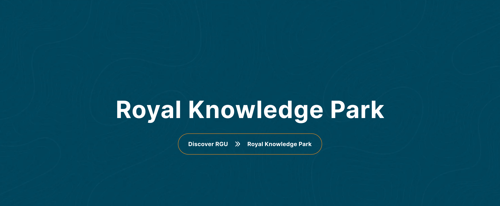

| # | Category | Question | Answer |
|---|---|---|---|
| 1 | Orientation | Is it must to attend the first day of class? What is orientation? | Yes, attending first day of class is compulsory. We want to make sure that your transition to higher education goes well and works to your benefit. So to acquaint you with your new alma mater, we organiz an orientation programme for all the new ROYALites at the beginning of the academic session. The Orientation Programme includes faculty and administrators of Royal Global University who come together to greet you as you begin your academic career with us. During the Orientation, there will be presentations that are important to you as you grow with us in RGU through your academic journey. |
| 2 | Books | Are books provided by the university? | We have a provision of Book Bank under which we issue 6-7 books to every student. Also there is a well-stocked library in the university campus from where students can get books issued for 15 days. However if any student wishes to purchase a book, they can purchase from the market at their own cost. |
| 3 | Gender | Do both boys and girls study in the same campus? | Yes |
| 4 | Attendance | I want to know about attendance of classes? | As per UGC norms, a student must have minimum 75% attendance in class. |
| 5 | RGU | Is it worth joining the RGU? | With experienced faculty and world class infrastructure & facilities, Royal Global University is one of the finest Universities of the country. RGU offers a unique educational experience that prepares the next generation of global citizens to lead and make a difference in the world. RGU is a leading educational hub in the North Eastern region that maintains a particular commitment to exceptional undergraduate and postgraduate instructions. Undergraduates, Graduates and post graduates will have variety of options available to them. RGU ensures that its students are transformed into well-rounded, industry-ready individuals, who are equipped to take on leadership responsibilities. RGU stands to be recognized for its world-class infrastructure, cultural events, campus recruitment programmes and activities, expert students, and updated facilities |
| 6 | Dress Code | Is there any dress code at RGU? | Yes, RGU has a dress code for the students. |
| 7 | Ragging | What kind of measures do you have for ragging at RGU? | Each student taking admission in RGU has to submit a Non-Judiciary Anti-Ragging Affidavit. |
| 8 | Security | What kind of security system do you have at RGU? | High boundary walls and round the clock, well trained security guards patrolling the area 24x7 make the campus safe and secure. CCTV cameras, fire alarms, and anti-ragging squad further add to the safety of our students and staff. No one can enter or leave the campus without proper authorization which is verified at various levels. |
| 9 | Admissions | When to apply for RGU admissions? | https://admissions.rgu.ac/ - visit website and apply , we will connect with you immediately |
| 10 | Degree | Who will give the degree? Royal Global University or Gauhati University/Assam Science & Technology University? | Royal Global University |
| 11 | Marksheet | I lost a marksheet of one year/semester, but I have a provisional marksheet downloaded from the university website. Would that suffice? | You can submit the provisional marksheet for the time being. But you will have to eventually apply for the duplicate mark sheet and submit the same. |
| 12 | Application Form | After submission of the form can i make some changes? | After final submission of the application form, the candidate can seek help from the assigned counsellor |
| 13 | Last Date | Could you please tell me the last date for the application form for post graduate? | Last date of PG admissions will be notified as fixed by the competant authority. |
| 14 | Registration Form | I am having trouble in submitting my registration form. Whom should I contact? | Please contact your concerned counselor for help. |
| 15 | Last Date | What is the last date for submitting application form? | Will be intimated by the concerned counselor. |
| 16 | Admissions | What is the last date of admission for the course? | Last date of admission is as per notification from competent authority |
| 17 | How to apply | Where to apply for the course? | Once the admission schedule is announced, the application form will be available online on the University website. For more details keep checking our website www.rgu.ac |
| 18 | Tie Up | Does RGU have tie up with SRI SANKARADEVA NETHRALAYA, GUWAHATI? | Yes, RGU has tie up with SRI SANKARADEVA NETHRALAYA, GUWAHATI to benefit the students of B. Optometry in availing hands - on practical training and clinical exposure. |
| 19 | Tie Up | Does RGU have tie ups for practical trainings for B.Sc. Nursing course? | Yes, EXCELCARE HOSPITALS (A UNIT OF ASCLEPIUS HOSPITALS & HEALTH CARE PVT. LTD.), MAHENDRA MOHAN CHOUDHURY HOSPITAL (MMCH), HEALTH CITY HOSPITAL, GUWAHATI (A UNIT OF NORTH EAST HEALTH CITY PVT. LTD), SHREE MARWARI DATABYA AUSHADHALAYA , GUWAHATI etc are some of the Hospitals or Health care units that RGU have tie ups with for practical trainings or clinical exposure for students of B.Sc. Nursing . |
| 20 | Tie Up | Does RGU have tie ups for practical trainings for Hotel Management & Travel and Tourism Management courses? | Yes, RGU has tie ups with different reputed hotels like Radission Blu, Vivanta by Taj etc for Practical trainings, industrial visit, internships, projects as well as guest lectures by hospitality professionals for the students of Royal School of Hotel Management (RSHM) as well as Royal School of Travel & Tourism Management (RSTTM). |
| 21 | Awards | Can you tell us about the awards & achievements of RGU? | •CSR Top Promising Engineering College & Most Promising B-School, 2019 •Ranked among the 10 most Inspiring Institutes for Commerce & Arts in 2018 by the Knowledge Review •Royal Global University recognized as HIGHER EDUCATION Review UNIVERSITY OF THE YEAR- 2017 Student Engagement •Ranked No. 37 in Business India Magazine in Best B-Schools Survey 2017 •Ranked A+++ by Business India magazine in best B-schools’ survey •Ranked No.1 in North-East by Education World •Ranked among Top 100 Engineering Colleges in India. •Ranked among India’s Top Non-IIT Engineering Colleges. •Awarded CMAI-national Assam Education Award for Excellent Industry Interface. •IIC-RGU received 3 star out of 4 star rating by MOE, Govt. of India. •Royal Innovation Incubator has been certified by ATAL Ranking of Institutions on Innovation Achievements. •IIC-RGU has been selected as Mentor Institute for ATAL Tinkering Lab within Assam. |
| 22 | Rank | What is the rank of RGU in Assam as a private university? | RGU has been Ranked No.1 Private University in Assam by Centre for Forecasting & Research(C-Fore), Delhi in 2020 |
| 23 | Rank | What is the rank of Royal School of Engineering & Technology in Assam? | Ranked as No. 1 Engineering College in Assam and amongst promising Engineering Colleges in India by CSR-GHRDC Engineering College Survey 2019 |
| 24 | Fees | What is the amount to be paid at the time of admission? | Details of amount to be paid will be mentined in the provisional admission offer letter issued to the candidate after selection in the personal interview. |
| 25 | Refund | Can there be a refund of fees after admission or if a student withdraws from the programs? | It is at the discretion of the University Academic Council. |
| 26 | Fees | Can u give me the fee structure? | Kindly visit our website at www.rgu.ac for fee structure and other detail. Or you can call us at our |
| 27 | Fees | Can u tell me that do I hv to pay the whole three year fee at the same time? | No, you can either pay every six months or annually. |
| 28 | Fees | Do we have to pay anything extra besides our fees mentioned in the prospectus? | No |
| 29 | Fees | What is the mode of tution fee payment? | You can pay through - Demand draft/ NEFT/RTGS/ online banking/ online transfer etc |
| 30 | Fees | Is there a capitation fee? | No. |
| 31 | Fees | Is there any facility for payment of course fees in installments? | Yes. There are two options for payment of course fees. Semesterwise Payment & Yearly Payment |
| 32 | Fees | Should I pay the admission fee every year? | No, registration, admission and caution money has to be paid only once irrespective of the course duration. |
| 33 | Fees | What is the application fee? | Application Fee is Rs 1000/- |
| 34 | Fees | What is the caution deposit amount? | Caution deposit amount is 5000/- which is a refundable amount at the end of the course. |
| 35 | Fees | What is the fee structure of B. Optometry? | Prospectus fee 1000/- Registration fee 40000/- Admission fee 10000/- Caution Money 5000/- Semester wise Payment 39000/- OR Yearly Payment 75000/- |
| 36 | Fees | What is the fee structure of B.Arch.? | Prospectus fee 1000/- Registration fee 40000/- Admission fee 10000/- Caution Money 5000/- Semester wise Payment 76500/- OR Yearly Payment 150000/- |
| 37 | Fees | What is the fee structure of B.Com (H) Finance & Accounts? | Prospectus fee 1000/- Registration fee 40000/- Admission fee 10000/- Caution Money 5000/- Semester wise Payment 65000/- OR Yearly Payment 130000/- |
| 38 | Fees | What is the fee structure of B.Com (H)? | Prospectus fee 1000/- Registration fee 40000/- Admission fee 10000/- Caution Money 5000/- Semester wise Payment 66500/- OR Yearly Payment 130000/- |
| 39 | Fees | What is the fee structure of B.Com (H) (Morning shift)? | Prospectus fee 1000/- Registration fee 40000/- Admission fee 10000/- Caution Money 5000/- Semester wise Payment 76500/- OR Yearly Payment 150000/- |
| 40 | Fees | What is the fee structure of B.Pharm.? | Prospectus fee 1000/- Registration fee 40000/- Admission fee 10000/- Caution Money 5000/- Semester wise Payment 73000/- OR Yearly Payment 142000/- |
| 41 | Fees | What is the fee structure of B.Sc. - Dialysis? | Prospectus fee 1000/- Registration fee 40000/- Admission fee 10000/- Caution Money 5000/- Semester wise Payment 39000/- OR Yearly Payment 75000/- |
| 42 | Fees | What is the fee structure of B.Sc. Environmental Sc. & Climate Change? | Prospectus fee 1000/- Registration fee 40000/- Admission fee 10000/- Caution Money 5000/- Semester wise Payment 39000/- OR Yearly Payment 75000/- |
| 43 | Fees | What is the fee structure of B.Sc. - Operation Theatre Technology (OTT)? | Prospectus fee 1000/- Registration fee 40000/- Admission fee 10000/- Caution Money 5000/- Semester wise Payment 39000/- OR Yearly Payment 75000/- |
| 44 | Fees | What is the fee structure of B.Sc. - Radiography and Advance Imaging Technology? | Prospectus fee 1000/- Registration fee 40000/- Admission fee 10000/- Caution Money 5000/- Semester wise Payment 39000/- OR Yearly Payment 75000/- |
| 45 | Fees | What is the fee structure of B.Sc. - Trauma Emergency and Disaster Management? | Prospectus fee 1000/- Registration fee 40000/- Admission fee 10000/- Caution Money 5000/- Semester wise Payment 39000/- OR Yearly Payment 75000/- |
| 46 | Fees | What is the fee structure of B.Sc. (H) - Chemistry? | Prospectus fee 1000/- Registration fee 40000/- Admission fee 10000/- Caution Money 5000/- Semester wise Payment 39000/- OR Yearly Payment 75000/- |
| 47 | Fees | What is the fee structure of B.Sc. (H) - Mathematics? | Prospectus fee 1000/- Registration fee 40000/- Admission fee 10000/- Caution Money 5000/- Semester wise Payment 39000/- OR Yearly Payment 75000/- |
| 48 | Fees | What is the fee structure of B.Sc. (H) - Medical Laboratory Technology (BMLT)? | Prospectus fee 1000/- Registration fee 40000/- Admission fee 10000/- Caution Money 5000/- Semester wise Payment 39000/- OR Yearly Payment 75000/- |
| 49 | Fees | What is the fee structure of B.Sc. (H) - Nutrition and Dietetics? | Prospectus fee 1000/- Registration fee 40000/- Admission fee 10000/- Caution Money 5000/- Semester wise Payment 36500/- OR Yearly Payment 70000/- |
| 50 | Fees | What is the fee structure of B.Sc. (H) - Physics? | Prospectus fee 1000/- Registration fee 40000/- Admission fee 10000/- Caution Money 5000/- Semester wise Payment 39000/- OR Yearly Payment 75000/- |
| 51 | Fees | What is the fee structure of B.Sc. (H) Actuarial Science? | Prospectus fee 1000/- Registration fee 40000/- Admission fee 10000/- Caution Money 5000/- Semester wise Payment 39000/- OR Yearly Payment 75000/- |
| 52 | Fees | What is the fee structure of B.Sc. (H) Animation and Visual Effects? | Prospectus fee 1000/- Registration fee 40000/- Admission fee 10000/- Caution Money 5000/- Semester wise Payment 39000/- OR Yearly Payment 75000/- |
| 53 | Fees | What is the fee structure of B.Sc. (H) Bio-chemistry? | Prospectus fee 1000/- Registration fee 40000/- Admission fee 10000/- Caution Money 5000/- Semester wise Payment 39000/- OR Yearly Payment 75000/- |
| 54 | Fees | What is the fee structure of B.Sc. (H) Bio-technology? | Prospectus fee 1000/- Registration fee 40000/- Admission fee 10000/- Caution Money 5000/- Semester wise Payment 39000/- OR Yearly Payment 75000/- |
| 55 | Fees | What is the fee structure of B.Sc. (H) Botany? | Prospectus fee 1000/- Registration fee 40000/- Admission fee 10000/- Caution Money 5000/- Semester wise Payment 39000/- OR Yearly Payment 75000/- |
| 56 | Fees | What is the fee structure of B.Sc. (H) Data Science? | Prospectus fee 1000/- Registration fee 40000/- Admission fee 10000/- Caution Money 5000/- Semester wise Payment 39000/- OR Yearly Payment 75000/- |
| 57 | Fees | What is the fee structure of B.Sc. (H) Food Technology? | Prospectus fee 1000/- Registration fee 40000/- Admission fee 10000/- Caution Money 5000/- Semester wise Payment 36500/- OR Yearly Payment 70000/- |
| 58 | Fees | What is the fee structure of B.Sc. (H) Forensic Science? | Prospectus fee 1000/- Registration fee 40000/- Admission fee 10000/- Caution Money 5000/- Semester wise Payment 39000/- OR Yearly Payment 75000/- |
| 59 | Fees | What is the fee structure of B.Sc. (H) Geology? | Prospectus fee 1000/- Registration fee 40000/- Admission fee 10000/- Caution Money 5000/- Semester wise Payment 36500/- OR Yearly Payment 70000/- |
| 60 | Fees | What is the fee structure of B.Sc. (H) IT? | Prospectus fee 1000/- Registration fee 40000/- Admission fee 10000/- Caution Money 5000/- Semester wise Payment 43000/- OR Yearly Payment 83000/- |
| 61 | Fees | What is the fee structure of B.Sc. (H) Microbiology? | Prospectus fee 1000/- Registration fee 40000/- Admission fee 10000/- Caution Money 5000/- Semester wise Payment 39000/- OR Yearly Payment 75000/- |
| 62 | Fees | What is the fee structure of B.Sc. (H) Zoology? | Prospectus fee 1000/- Registration fee 40000/- Admission fee 10000/- Caution Money 5000/- Semester wise Payment 39000/- OR Yearly Payment 75000/- |
| 63 | Fees | What is the fee structure of B.Sc. (H)/BA (H) Geography? | Prospectus fee 1000/- Registration fee 40000/- Admission fee 10000/- Caution Money 5000/- Semester wise Payment 39000/- OR Yearly Payment 75000/- |
| 64 | Fees | What is the fee structure of B.Sc. IT + M.Sc. IT (Integrated Programme)? | Prospectus fee 1000/- Registration fee 40000/- Admission fee 10000/- Caution Money 5000/- Semester wise Payment 43000/- OR Yearly Payment 83000/- |
| 65 | Fees | What is the fee structure of B.Sc. Nursing? | Prospectus fee 1000/- Registration fee 40000/- Admission fee 10000/- Caution Money 5000/- Semester wise Payment 76500/- OR Yearly Payment 150000/- |
| 66 | Fees | What is the fee structure of B.Sc. Nursing (Post Basic)? | Prospectus fee 1000/- Registration fee 40000/- Admission fee 10000/- Caution Money 5000/- Semester wise Payment 51500/- OR Yearly Payment 100000/- |
| 67 | Fees | What is the fee structure of B.Sc.(H) /BA (H) Travel & Tourism Management + Master of Travel & Tourism Management (Integrated Program)? | Prospectus fee 1000/- Registration fee 40000/- Admission fee 10000/- Caution Money 5000/- Semester wise Payment 39000/- OR Yearly Payment 75000/- |
| 68 | Fees | What is the fee structure of B.Sc.(H) /BA (H) Travel & Tourism Management? | Prospectus fee 1000/- Registration fee 40000/- Admission fee 10000/- Caution Money 5000/- Semester wise Payment 39000/- OR Yearly Payment 75000/- |
| 69 | Fees | What is the fee structure of B.Tech. (CE)? | Prospectus fee 1000/- Registration fee 40000/- Admission fee 10000/- Caution Money 5000/- Semester wise Payment 76500/- OR Yearly Payment 150000/- |
| 70 | Fees | What is the fee structure of B.Tech. (CE) + MBA? | Prospectus fee 1000/- Registration fee 40000/- Admission fee 10000/- Caution Money 5000/- Semester wise Payment 76500/- OR Yearly Payment 150000/- |
| 71 | Fees | What is the fee structure of B.Tech. (CSE) + MBA? | Prospectus fee 1000/- Registration fee 40000/- Admission fee 10000/- Caution Money 5000/- Semester wise Payment 76500/- OR Yearly Payment 150000/- |
| 72 | Fees | What is the fee structure of B.Tech. (CSE)? | Prospectus fee 1000/- Registration fee 40000/- Admission fee 10000/- Caution Money 5000/- Semester wise Payment 76500/- OR Yearly Payment 150000/- |
| 73 | Fees | What is the fee structure of B.Tech. (ME)? | Prospectus fee 1000/- Registration fee 40000/- Admission fee 10000/- Caution Money 5000/- Semester wise Payment 76500/- OR Yearly Payment 150000/- |
| 74 | Fees | What is the fee structure of B.Tech. (ME) + MBA? | Prospectus fee 1000/- Registration fee 40000/- Admission fee 10000/- Caution Money 5000/- Semester wise Payment 76500/- OR Yearly Payment 150000/- |
| 75 | Fees | What is the fee structure of B.Tech. + M.Tech. CE? | Prospectus fee 1000/- Registration fee 40000/- Admission fee 10000/- Caution Money 5000/- Semester wise Payment 76500/- OR Yearly Payment 150000/- |
| 76 | Fees | What is the fee structure of B.Tech. + M.Tech. CSE? | Prospectus fee 1000/- Registration fee 40000/- Admission fee 10000/- Caution Money 5000/- Semester wise Payment 76500/- OR Yearly Payment 150000/- |
| 77 | Fees | What is the fee structure of BA - Public Administration? | Prospectus fee 1000/- Registration fee 40000/- Admission fee 10000/- Caution Money 5000/- Semester wise Payment 39000/- OR Yearly Payment 75000/- |
| 78 | Fees | What is the fee structure of BA (H) /B.Sc. (H) Hotel Management? | Prospectus fee 1000/- Registration fee 40000/- Admission fee 10000/- Caution Money 5000/- Semester wise Payment 51500/- OR Yearly Payment 100000/- |
| 79 | Fees | What is the fee structure of BA (H) Administrative Service? | Prospectus fee 1000/- Registration fee 40000/- Admission fee 10000/- Caution Money 5000/- Semester wise Payment 39000/- OR Yearly Payment 75000/- |
| 80 | Fees | What is the fee structure of BA (H) Applied Psychology? | Prospectus fee 1000/- Registration fee 40000/- Admission fee 10000/- Caution Money 5000/- Semester wise Payment 39000/- OR Yearly Payment 75000/- |
| 81 | Fees | What is the fee structure of BA (H) -Economics? | Prospectus fee 1000/- Registration fee 40000/- Admission fee 10000/- Caution Money 5000/- Semester wise Payment 39000/- OR Yearly Payment 75000/- |
| 82 | Fees | What is the fee structure of BA (H) -English? | Prospectus fee 1000/- Registration fee 40000/- Admission fee 10000/- Caution Money 5000/- Semester wise Payment 39000/- OR Yearly Payment 75000/- |
| 83 | Fees | What is the fee structure of BA (H) Film and Television Production? | Prospectus fee 1000/- Registration fee 40000/- Admission fee 10000/- Caution Money 5000/- Semester wise Payment 39000/- OR Yearly Payment 75000/- |
| 84 | Fees | What is the fee structure of BA (H) History? | Prospectus fee 1000/- Registration fee 40000/- Admission fee 10000/- Caution Money 5000/- Semester wise Payment 39000/- OR Yearly Payment 75000/- |
| 85 | Fees | What is the fee structure of BA (H) J&MC? | Prospectus fee 1000/- Registration fee 40000/- Admission fee 10000/- Caution Money 5000/- Semester wise Payment 56500/- OR Yearly Payment 110000/- |
| 86 | Fees | What is the fee structure of BA (H) Pol. Science? | Prospectus fee 1000/- Registration fee 40000/- Admission fee 10000/- Caution Money 5000/- Semester wise Payment 39000/- OR Yearly Payment 75000/- |
| 87 | Fees | What is the fee structure of BA (H) Psychology? | Prospectus fee 1000/- Registration fee 40000/- Admission fee 10000/- Caution Money 5000/- Semester wise Payment 39000/- OR Yearly Payment 75000/- |
| 88 | Fees | What is the fee structure of BA (H) -Sociology? | Prospectus fee 1000/- Registration fee 40000/- Admission fee 10000/- Caution Money 5000/- Semester wise Payment 39000/- OR Yearly Payment 75000/- |
| 89 | Fees | What is the fee structure of BA (J&MC) + MA (J&MC) (Integrated Programme)? | Prospectus fee 1000/- Registration fee 40000/- Admission fee 10000/- Caution Money 5000/- Semester wise Payment 56500/- OR Yearly Payment 110000/- |
| 90 | Fees | What is the fee structure of BA + MA (Film and Television Production) - Integrated Programme? | Prospectus fee 1000/- Registration fee 40000/- Admission fee 10000/- Caution Money 5000/- Semester wise Payment 39000/- OR Yearly Payment 75000/- |
| 91 | Fees | What is the fee structure of BA/B.Sc. + M.Sc. Hotel Management/MHM (Integrated programme)? | Prospectus fee 1000/- Registration fee 40000/- Admission fee 10000/- Caution Money 5000/- Semester wise Payment 51500/- OR Yearly Payment 100000/- |
| 92 | Fees | What is the fee structure of Bachelor of Design (Communication Design) (B.Des. CD)? | Prospectus fee 1000/- Registration fee 40000/- Admission fee 10000/- Caution Money 5000/- Semester wise Payment 54000/- OR Yearly Payment 105000/- |
| 93 | Fees | What is the fee structure of Bachelor of Design (Fashion Design) (B.Des. FD)? | Prospectus fee 1000/- Registration fee 40000/- Admission fee 10000/- Caution Money 5000/- Semester wise Payment 54000/- OR Yearly Payment 105000/- |
| 94 | Fees | What is the fee structure of Bachelor of Design (Graphic Design) (B.Des. GD)? | Prospectus fee 1000/- Registration fee 40000/- Admission fee 10000/- Caution Money 5000/- Semester wise Payment 54000/- OR Yearly Payment 105000/- |
| 95 | Fees | What is the fee structure of Bachelor of Design (Product Design) (B.Des. PD)? | Prospectus fee 1000/- Registration fee 40000/- Admission fee 10000/- Caution Money 5000/- Semester wise Payment 54000/- OR Yearly Payment 105000/- |
| 96 | Fees | What is the fee structure of Bachelor of Fine Arts (BFA)? | Prospectus fee 1000/- Registration fee 40000/- Admission fee 10000/- Caution Money 5000/- Semester wise Payment 36500/- OR Yearly Payment 70000/- |
| 97 | Fees | What is the fee structure of Bachelor of Hotel Management & Catering Technology (BHMCT)? | Prospectus fee 1000/- Registration fee 40000/- Admission fee 10000/- Caution Money 5000/- Semester wise Payment 51500/- OR Yearly Payment 100000/- |
| 98 | Fees | What is the fee structure of Bachelor of Hotel Management (BHM)? | Prospectus fee 1000/- Registration fee 40000/- Admission fee 10000/- Caution Money 5000/- Semester wise Payment 51500/- OR Yearly Payment 100000/- |
| 99 | Fees | What is the fee structure of Bachelor of Interior Design (BID)? | Prospectus fee 1000/- Registration fee 40000/- Admission fee 10000/- Caution Money 5000/- Semester wise Payment 51500/- OR Yearly Payment 100000/- |
| 100 | Fees | What is the fee structure of Bachelor of Naturopathy and Yogic Sciences (BNYS)? | Prospectus fee 1000/- Registration fee 40000/- Admission fee 10000/- Caution Money 5000/- Semester wise Payment 39000/- OR Yearly Payment 75000/- |
| 101 | Fees | What is the fee structure of Bachelor of Physiotherapy (BPT)? | Prospectus fee 1000/- Registration fee 40000/- Admission fee 10000/- Caution Money 5000/- Semester wise Payment 51500/- OR Yearly Payment 100000/- |
| 102 | Fees | What is the fee structure of Bachelor of Travel & Tourism Management (BTTM) + Master of Travel & Tourism Management (MTTM)? | Prospectus fee 1000/- Registration fee 40000/- Admission fee 10000/- Caution Money 5000/- Semester wise Payment 39000/- OR Yearly Payment 75000/- |
| 103 | Fees | What is the fee structure of Bachelor of Travel & Tourism Management (BTTM)? | Prospectus fee 1000/- Registration fee 40000/- Admission fee 10000/- Caution Money 5000/- Semester wise Payment 39000/- OR Yearly Payment 75000/- |
| 104 | Fees | What is the fee structure of BA-LLB (H)? | Prospectus fee 1000/- Registration fee 40000/- Admission fee 10000/- Caution Money 5000/- Semester wise Payment 66500/- OR Yearly Payment 130000/- |
| 105 | Fees | What is the fee structure of BBA? | Prospectus fee 1000/- Registration fee 40000/- Admission fee 10000/- Caution Money 5000/- Semester wise Payment 86500/- OR Yearly Payment 170000/- |
| 106 | Fees | What is the fee structure of BBA & MBA? | Prospectus fee 1000/- Registration fee 40000/- Admission fee 10000/- Caution Money 5000/- Semester wise Payment 86500/- OR Yearly Payment 170000/- |
| 107 | Fees | What is the fee structure of BCA? | Prospectus fee 1000/- Registration fee 40000/- Admission fee 10000/- Caution Money 5000/- Semester wise Payment 45500/- OR Yearly Payment 88000/- |
| 108 | Fees | What is the fee structure of BCA + MCA (Integrated Programme)? | Prospectus fee 1000/- Registration fee 40000/- Admission fee 10000/- Caution Money 5000/- Semester wise Payment 45500/- OR Yearly Payment 88000/- |
| 109 | Fees | What is the fee structure of BHM/BHMCT + M.Sc. Hotel Management/MHM (Integrated programme)? | Prospectus fee 1000/- Registration fee 40000/- Admission fee 10000/- Caution Money 5000/- Semester wise Payment 51500/- OR Yearly Payment 100000/- |
| 110 | Fees | What is the fee structure of BSW? | Prospectus fee 1000/- Registration fee 40000/- Admission fee 10000/- Caution Money 5000/- Semester wise Payment 39000/- OR Yearly Payment 75000/- |
| 111 | Fees | What is the fee structure of BSW + MSW (Integrated programme)? | Prospectus fee 1000/- Registration fee 40000/- Admission fee 10000/- Caution Money 5000/- Semester wise Payment 39000/- OR Yearly Payment 75000/- |
| 112 | Fees | What is the fee structure of D.Pharm.? | Prospectus fee 1000/- Registration fee 40000/- Admission fee 10000/- Caution Money 5000/- Semester wise Payment 61500/- OR Yearly Payment 120000/- |
| 113 | Fees | What is the fee structure of Diploma in Fashion Design (DFD)? | Prospectus fee 1000/- Registration fee 40000/- Admission fee 10000/- Caution Money 5000/- Semester wise Payment 45000/- OR Yearly Payment 90000/- |
| 114 | Fees | What is the fee structure of Diploma in Hotel Management? | Prospectus fee 1000/- Registration fee 40000/- Admission fee 10000/- Caution Money 5000/- Semester wise Payment 45000/- OR Yearly Payment 87000/- |
| 115 | Fees | What is the fee structure of Diploma in Interior Design (DID) ? | Prospectus fee 1000/- Registration fee 40000/- Admission fee 10000/- Caution Money 5000/- Semester wise Payment 45000/- OR Yearly Payment 90000/- |
| 116 | Fees | What is the fee structure of Diploma in Medical Laboratory Technology (DMLT)? | Prospectus fee 1000/- Registration fee 40000/- Admission fee 10000/- Caution Money 5000/- Semester wise Payment 36500/- OR Yearly Payment 70000/- |
| 117 | Fees | What is the fee structure of Diploma in Optometry? | Prospectus fee 1000/- Registration fee 40000/- Admission fee 10000/- Caution Money 5000/- Semester wise Payment 36500/- OR Yearly Payment 70000/- |
| 118 | Fees | What is the fee structure of Diploma in Physiotherapy (DPT)? | Prospectus fee 1000/- Registration fee 40000/- Admission fee 10000/- Caution Money 5000/- Semester wise Payment 45000/- OR Yearly Payment 87000/- |
| 119 | Fees | What is the fee structure of Diploma in Travel & Tourism Management? | Prospectus fee 1000/- Registration fee 40000/- Admission fee 10000/- Caution Money 5000/- Semester wise Payment 45000/- OR Yearly Payment 87000/- |
| 120 | Fees | What is the fee structure of General Nursing & Midwifery (GNM)? | Prospectus fee 1000/- Registration fee 40000/- Admission fee 10000/- Caution Money 5000/- Semester wise Payment 61500/- OR Yearly Payment 120000/- |
| 121 | Fees | What is the fee structure of LLM Morning Shift? | Prospectus fee 1000/- Registration fee 40000/- Admission fee 10000/- Caution Money 5000/- Semester wise Payment 70000/- OR Yearly Payment 140000/- |
| 122 | Fees | What is the fee structure of LLM Day Shift? | Prospectus fee 1000/- Registration fee 40000/- Admission fee 10000/- Caution Money 5000/- Semester wise Payment 60000/- OR Yearly Payment 120000/- |
| 123 | Fees | What is the fee structure of M. Phil In Clinical Psychology? | Prospectus fee 1000/- Registration fee 40000/- Admission fee 10000/- Caution Money 5000/- Semester wise Payment 39000/- OR Yearly Payment 75000/- |
| 124 | Fees | What is the fee structure of M.Com.? | Prospectus fee 1000/- Registration fee 40000/- Admission fee 10000/- Caution Money 5000/- Semester wise Payment 39000/- OR Yearly Payment 75000/- |
| 125 | Fees | What is the fee structure of M.Optometry? | Prospectus fee 1000/- Registration fee 40000/- Admission fee 10000/- Caution Money 5000/- Semester wise Payment 39000/- OR Yearly Payment 75000/- |
| 126 | Fees | What is the fee structure of M.Pharm. in Pharmaceutical Chemistry? | Prospectus fee 1000/- Registration fee 40000/- Admission fee 10000/- Caution Money 5000/- Semester wise Payment 74500/- OR Yearly Payment 145000/- |
| 127 | Fees | What is the fee structure of M.Pharm. In Pharmaceutics? | Prospectus fee 1000/- Registration fee 40000/- Admission fee 10000/- Caution Money 5000/- Semester wise Payment 74500/- OR Yearly Payment 145000/- |
| 128 | Fees | What is the fee structure of M.Pharm. in Pharmacognosy? | Prospectus fee 1000/- Registration fee 40000/- Admission fee 10000/- Caution Money 5000/- Semester wise Payment 74500/- OR Yearly Payment 145000/- |
| 129 | Fees | What is the fee structure of M.Sc. - Chemistry? | Prospectus fee 1000/- Registration fee 40000/- Admission fee 10000/- Caution Money 5000/- Semester wise Payment 39000/- OR Yearly Payment 75000/- |
| 130 | Fees | What is the fee structure of M.Sc. Environmental Sc. & Climate Change? | Prospectus fee 1000/- Registration fee 40000/- Admission fee 10000/- Caution Money 5000/- Semester wise Payment 39000/- Yearly Payment 75000/- |
| 131 | Fees | What is the fee structure of M.Sc. - Mathematics? | Prospectus fee 1000/- Registration fee 40000/- Admission fee 10000/- Caution Money 5000/- Semester wise Payment 39000/- OR Yearly Payment 75000/- |
| 132 | Fees | What is the fee structure of M.Sc. - Medical Laboratory Technology (MMLT)? | Prospectus fee 1000/- Registration fee 40000/- Admission fee 10000/- Caution Money 5000/- Semester wise Payment 39000/- OR Yearly Payment 75000/- |
| 133 | Fees | What is the fee structure of M.Sc. - Nutrition and Dietetics? | Prospectus fee 1000/- Registration fee 40000/- Admission fee 10000/- Caution Money 5000/- Semester wise Payment 36500/- OR Yearly Payment 70000/- |
| 134 | Fees | What is the fee structure of M.Sc. - Physics? | Prospectus fee 1000/- Registration fee 40000/- Admission fee 10000/- Caution Money 5000/- Semester wise Payment 39000/- OR Yearly Payment 75000/- |
| 135 | Fees | What is the fee structure of M.Sc. (H) Food Technology? | Prospectus fee 1000/- Registration fee 40000/- Admission fee 10000/- Caution Money 5000/- Semester wise Payment 36500/- OR Yearly Payment 70000/- |
| 136 | Fees | What is the fee structure of M.Sc. (IT)? | Prospectus fee 1000/- Registration fee 40000/- Admission fee 10000/- Caution Money 5000/- Semester wise Payment 39000/- OR Yearly Payment 75000/- |
| 137 | Fees | What is the fee structure of M.Sc. Actuarial Science? | Prospectus fee 1000/- Registration fee 40000/- Admission fee 10000/- Caution Money 5000/- Semester wise Payment 39000/- OR Yearly Payment 75000/- |
| 138 | Fees | What is the fee structure of M.Sc. Animation and Visual Effects? | Prospectus fee 1000/- Registration fee 40000/- Admission fee 10000/- Caution Money 5000/- Semester wise Payment 39000/- OR Yearly Payment 75000/- |
| 139 | Fees | What is the fee structure of M.Sc. Bio-chemistry? | Prospectus fee 1000/- Registration fee 40000/- Admission fee 10000/- Caution Money 5000/- Semester wise Payment 39000/- OR Yearly Payment 75000/- |
| 140 | Fees | What is the fee structure of M.Sc. Bio-technology? | Prospectus fee 1000/- Registration fee 40000/- Admission fee 10000/- Caution Money 5000/- Semester wise Payment 39000/- OR Yearly Payment 75000/- |
| 141 | Fees | What is the fee structure of M.Sc. Botany? | Prospectus fee 1000/- Registration fee 40000/- Admission fee 10000/- Caution Money 5000/- Semester wise Payment 39000/- OR Yearly Payment 75000/- |
| 142 | Fees | What is the fee structure of M.Sc. Data Science? | Prospectus fee 1000/- Registration fee 40000/- Admission fee 10000/- Caution Money 5000/- Semester wise Payment 39000/- OR Yearly Payment 75000/- |
| 143 | Fees | What is the fee structure of M.Sc. Forensic Science? | Prospectus fee 1000/- Registration fee 40000/- Admission fee 10000/- Caution Money 5000/- Semester wise Payment 39000/- OR Yearly Payment 75000/- |
| 144 | Fees | What is the fee structure of M.Sc. Geology? | Prospectus fee 1000/- Registration fee 40000/- Admission fee 10000/- Caution Money 5000/- Semester wise Payment 36500/- OR Yearly Payment 70000/- |
| 145 | Fees | What is the fee structure of M.Sc. Hotel Management/MHM? | Prospectus fee 1000/- Registration fee 40000/- Admission fee 10000/- Caution Money 5000/- Semester wise Payment 39000/- OR Yearly Payment 75000/- |
| 146 | Fees | What is the fee structure of M.Sc. in Geoinformatics? | Prospectus fee 1000/- Registration fee 40000/- Admission fee 10000/- Caution Money 5000/- Semester wise Payment 39000/- OR Yearly Payment 75000/- |
| 147 | Fees | What is the fee structure of M.Sc. Microbiology? | Prospectus fee 1000/- Registration fee 40000/- Admission fee 10000/- Caution Money 5000/- Semester wise Payment 39000/- OR Yearly Payment 75000/- |
| 148 | Fees | What is the fee structure of M.Sc. Nursing in Child Health Nursing? | Prospectus fee 1000/- Registration fee 40000/- Admission fee 10000/- Caution Money 5000/- Semester wise Payment 66500/- OR Yearly Payment 130000/- |
| 149 | Fees | What is the fee structure of M.Sc. Nursing in OBE Nursing? | Prospectus fee 1000/- Registration fee 40000/- Admission fee 10000/- Caution Money 5000/- Semester wise Payment 66500/- OR Yearly Payment 130000/- |
| 150 | Fees | What is the fee structure of M.Sc. Nursing in Community Health Nursing? | Prospectus fee 1000/- Registration fee 40000/- Admission fee 10000/- Caution Money 5000/- Semester wise Payment 66500/- OR Yearly Payment 130000/- |
| 151 | Fees | What is the fee structure of M.Sc. Nursing in Medical Surgical Nursing? | Prospectus fee 1000/- Registration fee 40000/- Admission fee 10000/- Caution Money 5000/- Semester wise Payment 66500/- OR Yearly Payment 130000/- |
| 152 | Fees | What is the fee structure of M.Sc. Nursing in Mental Health Nursing | Prospectus fee 1000/- Registration fee 40000/- Admission fee 10000/- Caution Money 5000/- Semester wise Payment 66500/- OR Yearly Payment 130000/- |
| 153 | Fees | What is the fee structure of M.Sc. Zoology? | Prospectus fee 1000/- Registration fee 40000/- Admission fee 10000/- Caution Money 5000/- Semester wise Payment 39000/- OR Yearly Payment 75000/- |
| 154 | Fees | What is the fee structure of M.Sc./MA Geography? | Prospectus fee 1000/- Registration fee 40000/- Admission fee 10000/- Caution Money 5000/- Semester wise Payment 39000/- OR Yearly Payment 75000/- |
| 155 | Fees | What is the fee structure of M.Tech. CE in Structure Engineering? | Prospectus fee 1000/- Registration fee 40000/- Admission fee 10000/- Caution Money 5000/- Semester wise Payment 43500/- OR Yearly Payment 85000/- |
| 156 | Fees | What is the fee structure of M.Tech. CE in Water Resources Development & Management? | Prospectus fee 1000/- Registration fee 40000/- Admission fee 10000/- Caution Money 5000/- Semester wise Payment 43500/- OR Yearly Payment 85000/- |
| 157 | Fees | What is the fee structure of M.Tech. CSE Date Analytics & Engineering? | Prospectus fee 1000/- Registration fee 40000/- Admission fee 10000/- Caution Money 5000/- Semester wise Payment 43500/- OR Yearly Payment 85000/- |
| 158 | Fees | What is the fee structure of M.Tech. CSE in Artifical Intelligence? | Prospectus fee 1000/- Registration fee 40000/- Admission fee 10000/- Caution Money 5000/- Semester wise Payment 43500/- OR Yearly Payment 85000/- |
| 159 | Fees | What is the fee structure of M.Tech. CSE in Internet of Things? | Prospectus fee 1000/- Registration fee 40000/- Admission fee 10000/- Caution Money 5000/- Semester wise Payment 43500/- OR Yearly Payment 85000/- |
| 160 | Fees | What is the fee structure of M.Tech. CSE Networking & Web Engineering? | Prospectus fee 1000/- Registration fee 40000/- Admission fee 10000/- Caution Money 5000/- Semester wise Payment 43500/- OR Yearly Payment 85000/- |
| 161 | Fees | What is the fee structure of MA - English? | Prospectus fee 1000/- Registration fee 40000/- Admission fee 10000/- Caution Money 5000/- Semester wise Payment 39000/- OR Yearly Payment 75000/- |
| 162 | Fees | What is the fee structure of MA - Sociology? | Prospectus fee 1000/- Registration fee 40000/- Admission fee 10000/- Caution Money 5000/- Semester wise Payment 39000/- OR Yearly Payment 75000/- |
| 163 | Fees | What is the fee structure of MA (Film and Television Production)? | Prospectus fee 1000/- Registration fee 40000/- Admission fee 10000/- Caution Money 5000/- Semester wise Payment 39000/- OR Yearly Payment 75000/- |
| 164 | Fees | What is the fee structure of MA (H) -Economics ? | Prospectus fee 1000/- Registration fee 40000/- Admission fee 10000/- Caution Money 5000/- Semester wise Payment 39000/- OR Yearly Payment 75000/- |
| 165 | Fees | What is the fee structure of MA (H) J&MC? | Prospectus fee 1000/- Registration fee 40000/- Admission fee 10000/- Caution Money 5000/- Semester wise Payment 50000/- OR Yearly Payment 97000/- |
| 166 | Fees | What is the fee structure of MA Clinical Psychology? | Prospectus fee 1000/- Registration fee 40000/- Admission fee 10000/- Caution Money 5000/- Semester wise Payment 39000/- OR Yearly Payment 75000/- |
| 167 | Fees | What is the fee structure of MA History? | Prospectus fee 1000/- Registration fee 40000/- Admission fee 10000/- Caution Money 5000/- Semester wise Payment 39000/- OR Yearly Payment 75000/- |
| 168 | Fees | What is the fee structure of MA Pol. Science? | Prospectus fee 1000/- Registration fee 40000/- Admission fee 10000/- Caution Money 5000/- Semester wise Payment 39000/- OR Yearly Payment 75000/- |
| 169 | Fees | What is the fee structure of MA Psychology? | Prospectus fee 1000/- Registration fee 40000/- Admission fee 10000/- Caution Money 5000/- Semester wise Payment 39000/- OR Yearly Payment 75000/- |
| 170 | Fees | What is the fee structure of MA Public Administration? | Prospectus fee 1000/- Registration fee 40000/- Admission fee 10000/- Caution Money 5000/- Semester wise Payment 39000/- OR Yearly Payment 75000/- |
| 171 | Fees | What is the fee structure of Master of Physiotherapy (MPT)? | Prospectus fee 1000/- Registration fee 40000/- Admission fee 10000/- Caution Money 5000/- Semester wise Payment 39000/- OR Yearly Payment 75000/- |
| 172 | Fees | What is the fee structure of Master of Travel & Tourism Management (MTTM)? | Prospectus fee 1000/- Registration fee 40000/- Admission fee 10000/- Caution Money 5000/- Semester wise Payment 39000/- OR Yearly Payment 75000/- |
| 173 | Fees | What is the fee structure of MBA Interntional Business? | Prospectus fee 1000/- Registration fee 40000/- Admission fee 10000/- Caution Money 5000/- Semester wise Payment 120000/- OR Yearly Payment 235000/- |
| 174 | Fees | What is the fee structure of MBA? | Prospectus fee 1000/- Registration fee 40000/- Admission fee 10000/- Caution Money 5000/- Semester wise Payment 120000/- OR Yearly Payment 235000/- |
| 175 | Fees | What is the fee structure of MBA Banking & Finance ? | Prospectus fee 1000/- Registration fee 40000/- Admission fee 10000/- Caution Money 5000/- Semester wise Payment 120000/- OR Yearly Payment 235000/- |
| 176 | Fees | What is the fee structure of MBA Insurance & Banking? | Prospectus fee 1000/- Registration fee 40000/- Admission fee 10000/- Caution Money 5000/- Semester wise Payment 120000/- OR Yearly Payment 235000/- |
| 177 | Fees | What is the fee structure of MCA? | Prospectus fee 1000/- Registration fee 40000/- Admission fee 10000/- Caution Money 5000/- Semester wise Payment 39000/- OR Yearly Payment 75000/- |
| 178 | Fees | What is the fee structure of MSW? | Prospectus fee 1000/- Registration fee 40000/- Admission fee 10000/- Caution Money 5000/- Semester wise Payment 39000/- OR Yearly Payment 75000/- |
| 179 | Fees | What is the fee structure of PG Diploma in Functional Assamese? | Prospectus fee 1000/- Registration fee 40000/- Admission fee 10000/- Caution Money 5000/- Semester wise Payment 25000/- OR Yearly Payment 47000/- |
| 180 | Fees | What is the fee structure of PG Diploma in Yoga Therapy? | Prospectus fee 1000/- Registration fee 40000/- Admission fee 10000/- Caution Money 5000/- Semester wise Payment 25000/- OR Yearly Payment 47000/- |
| 181 | Fees | What is the registration fee? | Registration fee is Rs 40000/- |
| 182 | Fees | Will you please tell me about the fees of the courses one by one? | Kindly visit our website at www.rgu.ac for details |
| 183 | Distance Education | Do you offer a distance education programme? | No, we don’t offer any distance education programme. |
| 184 | Ph.D | I am a working person, should I have to give a NOC if I enroll myself in part-time Ph.D? | Yes, you will have to submit an NOC at the time of admission. |
| 185 | Courses | What are some of the highlights of MA(J&C) RGU ? | The intensive two-years/four-semester course in MA (J&MC)offers a systematic progression of hands-on production work and theoretical papers that allow students to experience the full range of technical expertise, conceptual skills and artistic expression required to become accomplished media practitioners in a social and technological environment where media, art and communication converge, engaging a diverse landscape of screens, platforms and audiences. Through a comprehensive education in courses such as Screenwriting, Photography, Sound & Radio, Media & Cultural Studies, Television Production, New Media Storytelling and the Digital Media Arts, the revised curriculum encourages the student to adopt a creative, professional and scholarly approach to both traditional and new media practices. The reinvented curriculum engages with the rapidly transforming mediascape while retaining the MCRC tradition of combining professional media expertise with social commitment. |
| 186 | Batch Commencement | When is the class starting? | Batch commencement dates are notified over email and sms after admissions as fixed by the competent authority. |
| 187 | Approvals | Are B. Tech programs AICTE/UGC approved? | Degrees awarded by the University are recognized by University Grants Commission, New Delhi under UGC Act, 1956. The degrees are also approved by All India Council of Technical Education (AICTE) |
| 188 | Course Duration | What is the duration of B.Sc.(H) in Medical Laboratory Technology- BMLT? | (3 Yrs+1 Yr Internship) |
| 189 | Application Form | Can i apply for more than 1 department ? | Yes |
| 190 | Lateral Entry | Can I get lateral entry for Electrical Engineering? | Sorry, RGU does not offer Electrical Engineering course. |
| 191 | Syllabus | Can I get the syllabus for the Ph.D. examination? | There is no such prescribed syllabus as such. You may follow the NET/SLET syallabus pattern. The written exam consist of two parts - Part I deals with Research Methodology and generally consist of MCQ based questions & Part II deals with subject specific paper and is descriptive in nature. |
| 192 | Dual course | Can I pursue two courses together, like B.Com and BBA? | No, you can’t pursue two courses together. |
| 193 | Career Opportunities | What are the career opportunities of B.Sc Physics? | B.Sc. Physics is an undergraduate course in the field of science. The course study educates the participants with various aspects of matter, motion, energy, time, and so on. The course offers adequate scope with regard to higher education as well as career. There exist ample master level courses for candidates who are interested in higher education. Apart from this, the candidate can seek career opportunities in Research organizations, and other related areas. Higher education after B.Sc. Physics increases the proximity to get in to a high designation job with rewarding compensation packages. |
| 194 | Duration | What is the duration of Diploma in Medical Laboratory Technology- DMLT? | (2 Yrs) |
| 195 | Duration | What is the duration of Diploma in Optometry? | (2 Yrs) |
| 196 | Ph.D | Do candidates who have qualified NET/SLET/M.Phil etc have to appear entrance examination for Ph.D? | Candidates with NET/SLET/M.Phil etc are exempted from the written examination. However they will have to appear for the personal interview. |
| 197 | Lateral Entry | Do we have provision for B.Tech lateral entry? | Yes, we have provision for B.Tech Lateral Entry. |
| 198 | Laptop | Do we receive a laptop for all the courses offered in RGU? | No, candidates do not receive laptops for any of the courses. |
| 199 | Ph.D | Do you offer a Ph.D. degree? | Yes |
| 200 | Laptop | Do you provide Laptops to B.Tech. Students? | No |
| 201 | Books | Is the cost of books included in the fee? | We have a provision of Book Bank under which we issue 6-7 books to every student. Besides there is a well stocked library in the university campus from where students can issue books for 15 days. The fee includes Library Fee, Tuition Fee |
| 202 | Industrial Tours | Does University provide any Industrial Tours? | Yes |
| 203 | Duration | What is the duration of Duration of B.Arch? | B.Arch 5 YEARS COURSE |
| 204 | Duration | What is the duration of Duration of B.I.D? | Bachelor of Interior Design is 4 years |
| 205 | Courses | Have a B.Sc in speech and hearing course? | Unfortunately, RGU doesn't offer B.Sc in Speech & Hearing course? |
| 206 | Evaluation | How are students evaluated in the regular programs? | Continuous evaluation and assessment is undertaken throughout the semester by way of assignments, projects, internships and presentations. Juries comprising academicians and industry professionals assess students' work and capabilities. The aim is to closely monitor students' evolution as competent professionals and provide critical feedback to students on their performance and development. |
| 207 | Registration | How do I register myself in my department after completion of admission? | Admitted students are given a step by step guidance at their Orientation Programme. |
| 208 | Admissions | How long will admissions for UG program be open? | Last date of admission is as per notification from competent authority |
| 209 | Application Form | How will I know that my application has been accepted or how will I know if I should come for the entrance? | Please register and login to your account for details at https://admissions.rgu.ac/ |
| 210 | Ph.D | How will the exam for Ph.D be conducted online or offline in 2023? | In the offline mode. |
| 211 | Ph.D | I am interested to take up Ph.D in Psychology . Is the admission process going on ? | The Ph.D. admissions are done on the basis of an entrance examination which is conducted twice a year. You can check our website at www.rgu.ac for Ph.D. notification and apply for the same accordingly. |
| 212 | Ph.D | Is Ph.D programme recognised by ugc? | Yes, all the programmes & courses at RGU are recognised by UGC |
| 213 | Branch Change | Is there any procedure of Branch change in II year of B.Tech? | Request for Branch change can be considered in the II Year subject to merit and availability of seats. |
| 214 | Duration | What is the duration of M.Sc. in Medical Laboratory Technology- MMLT? | (2 Yrs) |
| 215 | Ph.D | Should I have to submit migration if I enroll myself in the Ph.D programme? | Yes, one will have to submit migration at the time of university registration. |
| 216 | MBA | So what really is Management education all about? | It is a Two year full time course • It Gives exposure to the subjects of Finance, Marketing, Operations, HR and Systems. • It allows Specialization in one or more of these functional subjects. • It helps to develop good logical, analytical and presentation skills.• You get to look at problems/situations from different angles with a view to arrive at an effective solution for the same.• The course teaches one to work in a team, manage time and helps develop a good business perspective.• On an average, you get to study 40 - 45 subjects in the course.It involves written exams, presentations, short projects, case studies, assignments, summer projects, winter projects and any other projects you can get... can do it all in an MBA. |
| 217 | Last Date | Tell me the last date of apply for M.Sc botany? | Last date of PG admissions will be notified as fixed by the competent authority. |
| 218 | Evaluation | The result of the examination is given semester-wise or after completion of B.Tech program? | The result is announced semester-wise. |
| 219 | Transfer | Does RGU allow transfer of student from another university? | Yes, transfer of student from another university to RGU is possible. But there are certain formalities which needs to be followed. |
| 220 | Career Opportunities | What are the career opportunites after completing B.Tech? | A B.Tech.( Honours) degree will render you highly sought- after by industries. You will be known for your creative thinking, ability in problem solving and excellence in team -based environments. Civil Engineers improve systems and processes that allow human and nature to co-exist with minimal impact. Mechanical engineers, design advanced materials for supersonic and hypersonic space travel, design robots and automatic control systems etc. Computer Science Engineers design mobile applications, softwares, networks, etc |
| 221 | Career Opportunities | What are the career opportunities after B. Arch? | Career in Architecture is attractive, lucrative, and has lots of potential in terms of development. The architectural degree is designed in such a way that it fulfills the criteria of professional certifying bodies. This field covers different works such as spatial design, safety management, aesthetics, material management, etc. An architecture graduate is equipped to design right from iconic building to simple and comfortable living and is sensitive to the various needs of the society. An architect is a combination of Artist, Professional & Entrepreneur who has to work as per the need of the client. An architecture graduate can also get into varied fields such as film making, set designing, management etc. |
| 222 | Career Opportunities | What are the career opportunities after completing a M.Com course? | Those who are looking for a career opportunity in public sector after M.Com can join: Nationalized banks like State Bank of India, Union Bank of India etc. as Probationary Officer or Customer Relationship Executive. They can also join public sector undertakings like Bharat Sanchar Nigam Limited (BSNL), National Small Industries Corporation Limited (NSIC). Heavy Engineering Corporation Limited (HEC Ltd) etc. FMCG companies like Hindustan Unilever Ltd, Nestle India, and Cadbury India etc. reputed private banks. Insurance companies as Financial Analyst, Credit Officer or Loan Officer etc. |
| 223 | Career Opportunities | What are the career opportunities after completing MBA? | Students who opt for MBA can build exciting careers in various corporate sectors like banks & financial institutions, They can also choose from a plethora of career options in areas such as marketing, supply chain management, sales, distribution management, market research analysis, media and advertising, event management, logistics, corporate marketing, entrepreneurship, PR managers to name a few. They can join their family business or be successful entrepreneurs in their own right after acquiring practical and theoritical knowledge in their areas. |
| 224 | Career Opportunities | What are the career opportunities after doing M.Sc Physics ? | M.Sc. is very much demanding & students can gain a respectable job in this area after completing the programme. There are various specializations that one can pursue in M.Sc. programme. On teh completion of M.Sc Physics, students can opt for research studies in top organizations such as ISRO, DRDO etc. They can also work in a government & private sectors in various technical & non-technical posts. Some of the job profiles for M.Sc. Physics Postgraduates are: Junior Research Fellow Research Scientist Medical Physicist Radiation Physicist Research Associate Online Tutor Subject Matter Expert Assistant Professor |
| 225 | Career Opportunities | What are the Career Opportunities Available for Fine Arts Graduates in India? | Students studying for this degree pursue majors like ceramics, creative writing, graphic design, painting, photography, printmaking, sculpture, studio art, and theater or art education. Graduates holding a BFA may find careers as: Craft or Fine artists, Multimedia artists, Actors, Art Directors, Art Teachers or Writers etc. Candidates who have completed their Masters in Fine Arts can avail career options in various fields such as art studios, advertising companies, publishing houses, product design, manufacturing department, magazines, television, graphic arts, teaching, theater productions and many more. |
| 226 | Career Opportunities | What are the career opportunities for a BBA student? | BBA lays the basic platform on the basis of which students can further explore the field of management education. BBA is beneficial for all those students who want to join management field for career opportunities. Both government as well as private sectors offers career opportunities to BBA graduates. Management professionals are hired by wide variety of industries, MNCs and organizations. The students can prepare for bank entrance examinations for building a career in the banking domain. Some of the domains where BBA graduates can be easily be absorbed are different private and public sector banks which include ICICI, HSBC, Standard Chartered, YES Bank, Axis bank and companies such as Delloitte offer various roles in finance sector such as financial analyst, management trainee, accountant etc. to the BBA graduates. Most of the BBA graduates strive hard to join this sector. Various companies providing sales and marketing profiles are SBI Life Insurance, Deutsche Bank, Nestle, Cadbury, Marico, Asian paints, Mudra, Leo Burnett etc. The aforementioned sales and marketing companies train the BBA graduates as per their company norms for delivering the required sales targets. Consulting services sector like IBM, Accenture, and Delloitte also provide ample employment opportunities and offer various roles in different management area (or functions).The BBA Graduates can also enroll for professional courses such as CA and ICWAI which are very much in demand these days. They can also enroll for post-graduation courses such as MBA and MCA depending on their choice. The BBA graduates can even opt for part-time jobs and enroll for some short duration computer courses which will be an added advantage. Students interested in taking up government jobs can prepare for UPSC exams such as civil services and NDA (National Defence Academy). The students also have good scope in fields such as accounting, real estate, information systems and entrepreneurship. |
| 227 | Career Opportunities | What are the career prospect after doing M.Sc. Biochemistry? | Due to its multidisciplinary nature, Biochemistry course comprises employment in fast growing areas of research and technology and will have an excellent set of career options ahead of you. This course allows students to enter in different research areas including interdisciplinary research areas including bioengineering and tissue engineering, and thus open lot of possibilities for students to join as PhD, Junior research fellow in research institutes and Universities. In the public sector as well as in commercial sector, biochemist are in great demand in research institutes, government departments, the National Health Service, forensic science and the Environment Agency, as well as in commercial sector such as pharmaceutical, food, biotechnology, water and agriculture industries. This course also encourages the student to take research and teaching as a career and can work a Lecturer and Assistant professor |
| 228 | Career Opportunities | What are the career prospect after doing M.Sc. Biotechnology? | Postgraduates are hired in industries such as Pharmaceuticals, Manufacturing, Biotechnology, Research Organizations, and FMCG besides colleges and universities as teachers. Some of the career paths are Agricultural Scientist, Bioinformatics specialist, Drug Designer, Environmental/Food Biotechnologist, Genetic Engineer, Pharmacognosist, Proteome and Genome Analyst. Post graduates are also encouraged for taking up research as a career. |
| 229 | Career Opportunities | What are the career prospect after doing M.Sc. Microbiology? | For M.Sc. Microbiology graduates, there is an abundance of job opportunities. Microbiology as a field has seen a radical growth in recent years. Owing to the rapid expansion of this sector, a number of fields open up for microbiology graduates to excel in such as food industries, pharmaceutical industries, hospitals, chemical industries and research and development organizations. Some of the job profiles for microbiology graduates are: Microbiologist, Medical Writing, Clinical Researcher, Molecular Biology, Medical Officer, Nutritionist, Lecturer etc. |
| 230 | Courses | What are the courses which RSFT offer? | Bachelor of Design in Fashion Design & Diploma in Fashion Design |
| 231 | Ph.D | What are the departments in which RGU offers Ph.D.? | Royal Global University offers Ph.D.in the following areas (Subject to availibility of Guide)- MATHEMATICS •PHYSICS •CHEMISTRY •MECHANICAL ENGINEERING •COMPUTERSCIENCE &ENGINEERING •CIVILENGINEERING •MANAGEMENT •PSYCHOLOGY •FINEARTS •JOURNALISM&MASS COMMUNICATION •HOTELMANAGEMENT •ENGLISH •COMMERCE •HISTORY •LAW •BOTANY •ZOOLOGY •BIO°TECHNOLOGY •BIO°CHEMISTRY •MICRO°BIOLOGY •ENVIRONMENTAL SCIENCE •GEOGRAPHY •GEOLOGY •ECONOMICS •SOCIOLOGY •POLITICALSCIENCE •SOCIALWORK •PUBLICADMINISTRATION •PHARMACY •NURSING •PHYSIOTHERAPY •TRAVEL&TOURISM etc |
| 232 | M.Tech | What are the departments offering M.Tech at RGU? | M.Tech in Civil & M.Tech in CSE |
| 233 | Physics | What are the learning facilities which the Physics Department provides? | Physics Department provides an inclusive and competitive atmosphere of excellence in teaching, learning and research with state-of-the-art infrastructure facilities. Royal Global University provides lab facilities for the experiments such as:Dual Trace Oscilloscopes, Hall effect setup, Ultrasonic interferometer, Curie Temperature determination setup, Function generators, Power supplies of different ranges, Modern and sophisticated labs for respective theory papers, LCR-Q meter, LCD projector etc. |
| 234 | M.Pharm | What are the specialisations available for M.Pharm course? | M.Pharm in (i) Pharmaceutics (ii)Pharmaceutical Chemistry and (iii)Pharmacognosy |
| 235 | M.Sc. Nursing | What are the specialisations available for M.Sc Nursing course? | M.Sc. Nursing (Medical Surgical Nursing / OBE Nursing / Child Health Nursing / Mental Health Nursing / Community Health Nursing) |
| 236 | MBA | What are the specialisations of MBA available at RGU? | Specialisations of MBA at RGU are - Human resource, Marketing, Finance, Entrepreneurship, Operations, Sales & Marketing, International Business, Insurance & Banking etc |
| 237 | M.Tech | What are the specializations available of M.Tech CE? | Specialization in: Water Resources Development & Management / Structure Engineering etc.) |
| 238 | M.Tech | What are the specializations available of M.Tech CSE? | Specialization in: Artificial Intelligence / Internet of Things / Data Analytics & Engineering / Networking and Web Engineering etc. |
| 239 | Duration | What is the duration for Pursuing BFA? | Duration of Bachelor of Fine Arts (BFA) is 4 years. |
| 240 | Integrated | What is the advantage of the integrated B.Tech + M.Tech course? | The idea of having an integrated Dual Degree programme phased over a 5-year period seamlessly is aimed at helping students not only save one year but also to gain the knowledge of a post-graduate student and will have a relative edge over the others as far as industry requirements are concerned. By taking up a 5-year integrated programme, one saves time and energy that is involved in taking up tests such as GATE for higher studies (M.Tech.). It not only enhances ones perspectives but paves the way for making him or her, a multi-tasking professional as the programme offers tailor-made industry-specific courses. The programme is intended to help students to make their career choice early and an early start in career goes a long way. Finally, five years of dedicated and determined study in Integrated B.Tech. + M.Tech. programme can get the students a great job with a big payroll, hence giving a safe and secure future. |
| 241 | Integrated | What is the advantage of the integrated BBA + MBA programme? | The idea of having an integrated Dual Degree programme phased over a 4-year period seamlessly is aimed at helping students not only save one year but also to gain the knowledge of a post-graduate student. At the end of the four year Integrated Masters in Business Administration program, students will have a thorough grounding in management fundamentals with a BBA degree and gain specialization in Finance, HR, Marketing, Family Business and Entrepreneurship with an MBA degree . The industry and entrepreneurship oriented curriculum offers a number of specializations and practical exposures which would equip the student to face the contemporary challenges in the field. The program with extracurricular competency development courses, with a strong value base, enables students to take up leadership positions, and become socially involved, as innovative business leaders and entrepreneurs. |
| 242 | Class Strength | What is the average strength of the class? | 60 |
| 243 | Class timing | What is the class timings for B.Com (H) Morniing shift ? | Morning 6.00 am to 10.30 am. |
| 244 | Duration | What is the course duration of Diploma in Hotel Management? | (2 Yrs) |
| 245 | Duration | What is the course duration of B. Optometry? | (4 yrs) |
| 246 | Duration | What is the course duration of B.Arch.? | 5 yrs |
| 247 | Duration | What is the course duration of B.Com.? | 3 yrs |
| 248 | Duration | What is the course duration of B.Des Communication Design? | 4 yrs |
| 249 | Duration | What is the course duration of B.Des Fashion Design? | 4 yrs |
| 250 | Duration | What is the course duration of B.Des Graphic Design? | 4 yrs |
| 251 | Duration | What is the course duration of B.Des Product Design? | 4 yrs |
| 252 | Duration | What is the course duration of B.Pharm.? | (4 yrs) |
| 253 | Duration | What is the course duration of B.Sc Chemistry? | 3 yrs |
| 254 | Duration | What is the course duration of B.Sc Mathematics? | 3 yrs |
| 255 | Duration | What is the course duration of B.Sc Physics? | 3 yrs |
| 256 | Duration | What is the course duration of B.Sc. (H) - Actuarial Science? | (3 Yrs) |
| 257 | Duration | What is the course duration of B.Sc. (H) - Data Science? | (3 Yrs) |
| 258 | Duration | What is the course duration of B.Sc. (H) Bio-Chemistry? | (3 yrs) |
| 259 | Duration | What is the course duration of B.Sc. (H) Bio-Technology? | (3 yrs) |
| 260 | Duration | What is the course duration of B.Sc. (H) Botany? | 3 yrs |
| 261 | Duration | What is the course duration of B.Sc. (H) Environmental Sc. & Climate Change? | (3Yrs) |
| 262 | Duration | What is the course duration of B.Sc. (H) Food Technology? | (3 yrs) |
| 263 | Duration | What is the course duration of B.Sc. (H) Forensic Science? | (3 Yrs) |
| 264 | Duration | What is the course duration of B.Sc. (H) Geology? | (3 yrs) |
| 265 | Duration | What is the course duration of B.Sc. (H) Micro-Biology? | (3 yrs) |
| 266 | Duration | What is the course duration of B.Sc. (H) Zoology? | 3 yrs |
| 267 | Duration | What is the course duration of B.Sc. (H)/BA (H) Geography? | (3 yrs) |
| 268 | Duration | What is the course duration of B.Sc.(H) (Animation and Visual Effects)? | (3 yrs) |
| 269 | Duration | What is the course duration of B.Sc.(H) (IT) & M.Sc.(IT) - Integrated? | (4 Yrs.) |
| 270 | Duration | What is the course duration of B.Sc.(H) (IT)? | (3 Yrs) |
| 271 | Duration | What is the course duration of B.Sc.(H) /BA (H) Travel & Tourism Management + Master of Travel & Tourism Management - Integrated? | (4 Yrs) |
| 272 | Duration | What is the course duration of B.Sc.(H) in Dialysis? | (3 Yrs) |
| 273 | Duration | What is the course duration of B.Sc.(H) in Nutrition and Dietics? | (3 yrs) |
| 274 | Duration | What is the course duration of B.Sc.(H) in Operation Theatre Technology? | (3 Yrs) |
| 275 | Duration | What is the course duration of B.Sc.(H) in Radiography & Advance Imaging Technology? | (3 Yrs) |
| 276 | Duration | What is the course duration of B.Sc.(H) in Trauma Emergency & Disaster Management? | (3 Yrs) |
| 277 | Duration | What is the course duration of B.Sc./BA(H) - Hotel Management? | (3 yrs) |
| 278 | Duration | What is the course duration of B.Sc./BA(H) Travel & Tourism Management? | (3 years) |
| 279 | Duration | What is the course duration of B.Sc.Nursing - Post Basic? | (2 Yrs.) |
| 280 | Duration | What is the course duration of B.Sc.Nursing? | (4 Yrs.) |
| 281 | Duration | What is the course duration of B.Tech ME? | 4 yrs |
| 282 | Duration | What is the course duration of B.Tech CE? | 4 yrs |
| 283 | Duration | What is the course duration of B.Tech CSE? | 4 yrs |
| 284 | Duration | What is the course duration of BA - LLB (Hons.)? | (5 Yrs) |
| 285 | Duration | What is the course duration of BA (H) - Administrative Service? | (3 Yrs) |
| 286 | Duration | What is the course duration of BA (H) - Applied Psychology? | (3 Yrs) |
| 287 | Duration | What is the course duration of BA (H) - Economics? | (3 Yrs) |
| 288 | Duration | What is the course duration of BA (H) - English? | (3 Yrs) |
| 289 | Duration | What is the course duration of BA (H) - Psychology? | (3 Yrs) |
| 290 | Duration | What is the course duration of BA (H) - Sociology? | (3 Yrs) |
| 291 | Duration | What is the course duration of BA (H) History? | (3 yrs) |
| 292 | Duration | What is the course duration of BA (H) Pol. Science? | (3 yrs) |
| 293 | Duration | What is the course duration of BA(H) (Film and Television Production)? | (3 yrs) |
| 294 | Duration | What is the course duration of BA(H) (J & MC) & MA (J & MC) - Integrated? | (4 Yrs) |
| 295 | Duration | What is the course duration of BA(H) (J & MC)? | 3 Yrs |
| 296 | Duration | What is the course duration of BA(H)+MA (Film and Television Production) - Integrated? | (4 yrs) |
| 297 | Duration | What is the course duration of BA(Public Administration)? | (3 Yrs) |
| 298 | Duration | What is the course duration of BA/B.Sc.(H)+M.Sc. Hotel Management/MHM - Integrated? | (4 Yrs) |
| 299 | Duration | What is the course duration of Bachelor of Hotel Management - BHM? | (4 Yrs) |
| 300 | Duration | What is the course duration of Bachelor of Hotel Management & Catering Technology -BHMCT? | (4 Yrs) |
| 301 | Duration | What is the course duration of Bachelor of Naturopathy and Yogic Sciences - BNYS? | (5 Yrs) |
| 302 | Duration | What is the course duration of Bachelor of Travel & Tourism Management - BTTM? | (4 Yrs) |
| 303 | Duration | What is the course duration of Bachlor of Physiotherapy - BPT? | (4 Yrs 6 Months) |
| 304 | Duration | What is the course duration of BBA? | 3 yrs |
| 305 | Duration | What is the course duration of BCA? | (3 Yrs) |
| 306 | Duration | What is the course duration of BCA+MCA - Integrated? | (5 Yrs) |
| 307 | Duration | What is the course duration of BFA? | 4 yrs |
| 308 | Duration | What is the course duration of BHM/BHMCT + M.Sc. Hotel Management/MHM - Integrated? | (5 Yrs) |
| 309 | Duration | What is the course duration of BID? | 4 yrs |
| 310 | Duration | What is the course duration of BSW & MSW - Integrated? | (4 yrs) |
| 311 | Duration | What is the course duration of BSW? | (3 yrs) |
| 312 | Duration | What is the course duration of BTTM & MTTM - Integrated? | (5 Years) |
| 313 | Duration | What is the course duration of D.Pharm? | (2 Yrs) |
| 314 | Duration | What is the course duration of DID? | 1 yr |
| 315 | Duration | What is the course duration of Diploma in Fashion Design? | 1 yr |
| 316 | Duration | What is the course duration of Diploma in Physiotherapy - DPT? | (2/3 Yrs) |
| 317 | Duration | What is the course duration of Diploma in Travel & Tourism Management? | (2 Yrs) |
| 318 | Duration | What is the course duration of General Nursing & Midwifery? | (3 Yrs.) |
| 319 | Duration | What is the course duration of LLM? | (1 Yrs.) |
| 320 | Duration | What is the course duration of LLM-Morning Shift? | (1 Yrs.) |
| 321 | Duration | What is the course duration of M. Optometry? | (2 yrs) |
| 322 | Duration | What is the course duration of M.Com? | 3 yrs |
| 323 | Duration | What is the course duration of M.Pharm? | (2 Yrs) |
| 324 | Duration | What is the course duration of M.Phil. In Clinical Psychology? | (2 Yrs) |
| 325 | Duration | What is the course duration of M.Sc Chemistry? | 2 yrs |
| 326 | Duration | What is the course duration of M.Sc Mathematics? | 2 yrs |
| 327 | Duration | What is the course duration of M.Sc Physics? | 2 yrs |
| 328 | Duration | What is the course duration of M.Sc. - Actuarial Science? | (2 Yrs) |
| 329 | Duration | What is the course duration of M.Sc. - Data Science? | (2 Yrs) |
| 330 | Duration | What is the course duration of M.Sc. Environmental Sc. & Climate Change? | (2Yrs) |
| 331 | Duration | What is the course duration of M.Sc. - Hotel Management/MHM? | (2 yrs) |
| 332 | Duration | What is the course duration of M.Sc. (Animation and Visual Effects)? | (2 yrs) |
| 333 | Duration | What is the course duration of M.Sc. (IT)? | (2 Yrs) |
| 334 | Duration | What is the course duration of M.Sc. Bio-Chemistry? | (2 yrs) |
| 335 | Duration | What is the course duration of M.Sc. Bio-Technology? | (2 yrs) |
| 336 | Duration | What is the course duration of M.Sc. Botany? | 2 yrs |
| 337 | Duration | What is the course duration of M.Sc. Food Technology? | (2 yrs) |
| 338 | Duration | What is the course duration of M.Sc. Forensic Science? | (2 Yrs) |
| 339 | Duration | What is the course duration of M.Sc. Geoinformatics? | (2 yrs) |
| 340 | Duration | What is the course duration of M.Sc. Geology? | (2 yrs) |
| 341 | Duration | What is the course duration of M.Sc. Micro-Biology? | (2 yrs) |
| 342 | Duration | What is the course duration of M.Sc. Nursing (Medical Surgical Nursing / OBE Nursing / Child Health Nursing / Mental Health Nursing / Community Health Nursing)? | 2 Yrs |
| 343 | Duration | What is the course duration of M.Sc. Zoology? | 2 yrs |
| 344 | Duration | What is the course duration of M.Sc.(H) in Nutrition and Dietics? | (2 yrs) |
| 345 | Duration | What is the course duration of M.Sc./MA Geography? | (2 yrs) |
| 346 | Duration | What is the course duration of M.Tech. CE? | 2 years |
| 347 | Duration | What is the course duration of M.Tech. CSE? | 2 years |
| 348 | Duration | What is the course duration of MA - Psychology? | (2 Yrs) |
| 349 | Duration | What is the course duration of MA - Clinical Psychology? | (2 Yrs) |
| 350 | Duration | What is the course duration of MA - English? | (2 Yrs) |
| 351 | Duration | What is the course duration of MA (Film and Television Production)? | (2 yrs) |
| 352 | Duration | What is the course duration of MA (J & MC)? | 2 Yrs |
| 353 | Duration | What is the course duration of MA Economics? | (2 yrs) |
| 354 | Duration | What is the course duration of MA History? | (2 yrs) |
| 355 | Duration | What is the course duration of MA Pol. Science? | (2 yrs) |
| 356 | Duration | What is the course duration of MA Sociology? | (2 Yrs) |
| 357 | Duration | What is the course duration of MA(Public Administration)? | (2 Yrs) |
| 358 | Duration | What is the course duration of Master of Travel & Tourism Management - MTTM? | (2 years) |
| 359 | Duration | What is the course duration of Masters in Physiotherapy - MPT? | (2 Yrs) |
| 360 | Duration | What is the course duration of MBA? | 2 yrs |
| 361 | Duration | What is the course duration of MCA? | (2 Yrs) |
| 362 | Duration | What is the course duration of MSW? | (2 yrs) |
| 363 | Duration | What is the course duration of PG Diploma in Functional Assamese? | (1 Yr) |
| 364 | Duration | What is the course duration of PG Diploma in Yoga Therapy? | (1 Yr) |
| 365 | Duration | What is the duration of the integrated B.Tech + M.Tech course? | The duration is Five Years. |
| 366 | Ph.D | What is the exam pattern of the Ph.D entrance exam? | The Ph.D. entrance examination comprises of two parts - Written exam followed by personal interview. The written exam consist of both objective & descriptive questions. |
| 367 | Course Intake | What is the intake capacity of B.Pharm.? | 100 |
| 368 | Course Intake | What is the intake capacity of B.Sc.(H) (Animation and Visual Effects)? | 20 |
| 369 | Course Intake | What is the intake capacity of BA(H) (Film and Television Production)? | 10 |
| 370 | Course Intake | What is the intake capacity of Bachlor of Physiotherapy - BPT? | 60 |
| 371 | Course Intake | What is the intake capacity of D.Pharm? | 60 |
| 372 | Course Intake | What is the intake capacity of Diploma in Travel & Tourism Management? | 10 |
| 373 | Course Intake | What is the intake capacity of MA (Film and Television Production)? | 10 |
| 374 | Course Intake | What is the intake capacity of B. Optometry? | 30 |
| 375 | Course Intake | What is the intake capacity of B.Arch? | 40 |
| 376 | Course Intake | What is the intake capacity of B.Com.? | 110 |
| 377 | Course Intake | What is the intake capacity of B.Des Communication Design? | 10 |
| 378 | Course Intake | What is the intake capacity of B.Des Fashion Design? | 20 |
| 379 | Course Intake | What is the intake capacity of B.Des Graphic Design? | 20 |
| 380 | Course Intake | What is the intake capacity of B.Des Product Design? | 10 |
| 381 | Course Intake | What is the intake capacity of B.Sc Chemistry? | 20 |
| 382 | Course Intake | What is the intake capacity of B.Sc Mathematics? | 20 |
| 383 | Course Intake | What is the intake capacity of B.Sc Physics? | 20 |
| 384 | Course Intake | What is the intake capacity of B.Sc. (H) - Actuarial Science? | 10 |
| 385 | Course Intake | What is the intake capacity of B.Sc. (H) - Data Science? | 10 |
| 386 | Course Intake | What is the intake capacity of B.Sc. (H) Bio-Chemistry? | 15 |
| 387 | Course Intake | What is the intake capacity of B.Sc. (H) Bio-Technology? | 60 |
| 388 | Course Intake | What is the intake capacity of B.Sc. (H) Botany? | 20 |
| 389 | Course Intake | What is the intake capacity of B.Sc. (H) Environmental Sc. & Climate Change? | 15 |
| 390 | Course Intake | What is the intake capacity of B.Sc. (H) Food Technology? | 20 |
| 391 | Course Intake | What is the intake capacity of B.Sc. (H) Forensic Science? | 20 |
| 392 | Course Intake | What is the intake capacity of B.Sc. (H) Geology? | 15 |
| 393 | Course Intake | What is the intake capacity of B.Sc. (H) Micro-Biology? | 30 |
| 394 | Course Intake | What is the intake capacity of B.Sc. (H) Zoology? | 20 |
| 395 | Course Intake | What is the intake capacity of B.Sc. (H)/BA (H) Geography? | 40 |
| 396 | Course Intake | What is the intake capacity of B.Sc.(H) (IT)? | 15 |
| 397 | Course Intake | What is the intake capacity of B.Sc.(H) in Dialysis? | 30 |
| 398 | Course Intake | What is the intake capacity of B.Sc.(H) in Medical Laboratory Technology- BMLT? | 40 |
| 399 | Course Intake | What is the intake capacity of B.Sc.(H) in Nutrition and Dietics? | 10 |
| 400 | Course Intake | What is the intake capacity of B.Sc.(H) in Operation Theatre Technology? | 30 |
| 401 | Course Intake | What is the intake capacity of B.Sc.(H) in Radiography & Advance Imaging Technology? | 30 |
| 402 | Course Intake | What is the intake capacity of B.Sc.(H) in Trauma Emergency & Disaster Management? | 30 |
| 403 | Course Intake | What is the intake capacity of B.Sc./BA(H) - Hotel Management? | 30 |
| 404 | Course Intake | What is the intake capacity of B.Sc./BA(H) Travel & Tourism Management? | 30 |
| 405 | Course Intake | What is the intake capacity of B.Sc.Nursing - Post Basic? | 60 |
| 406 | Course Intake | What is the intake capacity of B.Sc.Nursing? | 60 |
| 407 | Course Intake | What is the intake capacity of B.Tech ME? | 60 |
| 408 | Course Intake | What is the intake capacity of B.Tech CE? | 120 |
| 409 | Course Intake | What is the intake capacity of B.Tech CSE? | 60 |
| 410 | Course Intake | What is the intake capacity of BA - LLB (Hons.)? | 60 |
| 411 | Course Intake | What is the intake capacity of BA (H) - Administrative Service? | 20 |
| 412 | Course Intake | What is the intake capacity of BA (H) - Applied Psychology? | 30 |
| 413 | Course Intake | What is the intake capacity of BA (H) - Economics? | 30 |
| 414 | Course Intake | What is the intake capacity of BA (H) - English? | 90 |
| 415 | Course Intake | What is the intake capacity of BA (H) - Psychology? | 60 |
| 416 | Course Intake | What is the intake capacity of BA (H) - Sociology? | 50 |
| 417 | Course Intake | What is the intake capacity of BA (H) History? | 30 |
| 418 | Course Intake | What is the intake capacity of BA (H) Pol. Science? | 90 |
| 419 | Course Intake | What is the intake capacity of BA(H) (J & MC)? | 30 |
| 420 | Course Intake | What is the intake capacity of BA(Public Administration? | 20 |
| 421 | Course Intake | What is the intake capacity of Bachelor of Hotel Management - BHM? | 10 |
| 422 | Course Intake | What is the intake capacity of Bachelor of Hotel Management & Catering Technology -BHMCT? | 10 |
| 423 | Course Intake | What is the intake capacity of Bachelor of Naturopathy and Yogic Sciences - BNYS? | 10 |
| 424 | Course Intake | What is the intake capacity of Bachelor of Travel & Tourism Management - BTTM? | 10 |
| 425 | Course Intake | What is the intake capacity of BBA? | 90 |
| 426 | Course Intake | What is the intake capacity of BCA? | 60 |
| 427 | Course Intake | What is the intake capacity of BFA? | 30 |
| 428 | Course Intake | What is the intake capacity of BID? | 30 |
| 429 | Course Intake | What is the intake capacity of BSW? | 20 |
| 430 | Course Intake | What is the intake capacity of DID? | 15 |
| 431 | Course Intake | What is the intake capacity of Diploma in Fashion Design? | 10 |
| 432 | Course Intake | What is the intake capacity of Diploma in Hotel Management? | 10 |
| 433 | Course Intake | What is the intake capacity of Diploma in Medical Laboratory Technology- DMLT? | 10 |
| 434 | Course Intake | What is the intake capacity of Diploma in Optometry? | 10 |
| 435 | Course Intake | What is the intake capacity of Diploma in Physiotherapy - DPT? | 10 |
| 436 | Course Intake | What is the intake capacity of General Nursing & Midwifery? | 60 |
| 437 | Course Intake | What is the intake capacity of LLM? | 60 |
| 438 | Course Intake | What is the intake capacity of M. Optometry? | 20 |
| 439 | Course Intake | What is the intake capacity of M.Com? | 20 |
| 440 | Course Intake | What is the intake capacity of M.Pharm? | 45 |
| 441 | Course Intake | What is the intake capacity of M.Phil. In Clinical Psychology? | 0 |
| 442 | Course Intake | What is the intake capacity of M.Sc Chemistry? | 40 |
| 443 | Course Intake | What is the intake capacity of M.Sc Mathematics? | 20 |
| 444 | Course Intake | What is the intake capacity of M.Sc Physics? | 30 |
| 445 | Course Intake | What is the intake capacity of M.Sc. - Actuarial Science? | 10 |
| 446 | Course Intake | What is the intake capacity of M.Sc. - Data Science? | 10 |
| 447 | Course Intake | What is the intake capacity of M.Sc. Environmental Sc. & Climate Change? | 10 |
| 448 | Course Intake | What is the intake capacity of M.Sc. - Hotel Management/MHM? | 10 |
| 449 | Course Intake | What is the intake capacity of M.Sc. (Animation and Visual Effects) ? | 10 |
| 450 | Course Intake | What is the intake capacity of M.Sc. (IT)? | 15 |
| 451 | Course Intake | What is the intake capacity of M.Sc. Bio-Chemistry? | 15 |
| 452 | Course Intake | What is the intake capacity of M.Sc. Bio-Technology? | 30 |
| 453 | Course Intake | What is the intake capacity of M.Sc. Botany? | 60 |
| 454 | Course Intake | What is the intake capacity of M.Sc. Food Technology? | 20 |
| 455 | Course Intake | What is the intake capacity of M.Sc. Forensic Science? | 20 |
| 456 | Course Intake | What is the intake capacity of M.Sc. Geoinformatics? | 30 |
| 457 | Course Intake | What is the intake capacity of M.Sc. Geology? | 15 |
| 458 | Course Intake | What is the intake capacity of M.Sc. in Medical Laboratory Technology- MMLT? | 20 |
| 459 | Course Intake | What is the intake capacity of M.Sc. Micro-Biology? | 30 |
| 460 | Course Intake | What is the intake capacity of M.Sc. Nursing ? | 30 |
| 461 | Course Intake | What is the intake capacity of M.Sc. Zoology? | 60 |
| 462 | Course Intake | What is the intake capacity of M.Sc.(H) in Nutrition and Dietics? | 10 |
| 463 | Course Intake | What is the intake capacity of M.Sc./MA Geography? | 20 |
| 464 | Course Intake | What is the intake capacity of M.Tech. CE? | 30 |
| 465 | Course Intake | What is the intake capacity of M.Tech. CSE? | 10 |
| 466 | Course Intake | What is the intake capacity of MA - Psychology? | 20 |
| 467 | Course Intake | What is the intake capacity of MA - Clinical Psychology? | 20 |
| 468 | Course Intake | What is the intake capacity of MA - English? | 90 |
| 469 | Course Intake | What is the intake capacity of MA (J & MC)? | 20 |
| 470 | Course Intake | What is the intake capacity of MA Economics? | 30 |
| 471 | Course Intake | What is the intake capacity of MA History? | 30 |
| 472 | Course Intake | What is the intake capacity of MA Pol. Science? | 40 |
| 473 | Course Intake | What is the intake capacity of MA Sociology? | 20 |
| 474 | Course Intake | What is the intake capacity of MA(Public Administration)? | 20 |
| 475 | Course Intake | What is the intake capacity of Master of Travel & Tourism Management - MTTM? | 30 |
| 476 | Course Intake | What is the intake capacity of Masters in Physiotherapy - MPT? | 20 |
| 477 | Course Intake | What is the intake capacity of MBA? | 60 |
| 478 | Course Intake | What is the intake capacity of MCA? | 40 |
| 479 | Course Intake | What is the intake capacity of MSW? | 30 |
| 480 | Course Intake | What is the intake capacity of PG Diploma in Functional Assamese? | 10 |
| 481 | Course Intake | What is the intake capacity of PG Diploma in Yoga Therapy? | 10 |
| 482 | Course Intake | What is the procedure for applying into M.Tech courses in RGU? | The candidate will have to fill up the form in the online mode by visiting our website at www.rgu.ac. & upload all the relevant documents. Application fee is Rs 1000/- |
| 483 | Career Opportunities | What is the remuneration of a Fine Arts Graduate in India? | The compensation of fine arts graduate depends on the nature of work he is engaged in. Graduates working in textile industries, advertising agencies and publishing houses start initially obtain a package of nearly Rs. 12,000 – Rs. 25,000. Fine arts professionals working in production houses, drama and theatre obtain a salary of nearly Rs. 8,000 – Rs. 20,000 on a monthly basis. Students in the teaching profession are also earning well.The career opportunities for the fine arts graduates in India is growing at a rapid rate and numerous students are opting for a career in this field although the income received by each graduate mainly depends on the ability and skill of the graduate. |
| 484 | Selection Criteria | What is the selection criteria for BBA & MBA (Integrated) course? | Based on overall performance in last examination followed by Personal Interview. |
| 485 | Selection Criteria | What is the selection criteria for BBA course? | Based on overall performance in last examination followed by Personal Interview. |
| 486 | Selection Criteria | What is the selection criteria for MBA? | An entrance test conducted by Royal Global University followed by Group Discussion and Personal Interview. Candidates with a valid score of CAT/ XAT/ GMAT /MAT/ CMAT or any other all India entrance test with minimum 75 percentile will be exempted from appearing in the entrance test conducted by the University. |
| 487 | MBA | What specialization should I take in MBA? | This should be decided on the basis of your interests and capabilities, as well as the institute's resources. There is no hard and fast rule that one should take up a particular specialization. Students can specialize in any of the following streams: Marketing, human resource, management, family business, entrepreneurship and finance. |
| 488 | Commerce | What subjects does one study in Commerce? | Accountancy, Business Studies, Statistics, Economics, Finance, Banking, Law, Taxation, Marketing, Management etc. |
| 489 | Integrated | What will be the duration of the integrated BBA + MBA programme? | The duration of the integrated BBA + MBA programme is 4 years? |
| 490 | Ph.D | When do Ph.D Entrance Examination are held? | There are two sessions in a year for Ph.D. (January to June)&( July to December). Accordingly notifications are given. |
| 491 | RSC | Why should I come to RSC? | The Royal School of Commerce provides a plethora of opportunities and facilities of facilities for the students to grow. The facilities like; Book Bank Facility for all admitted students, Special classes by experienced Chartered Accountants, Free Tally Training in Accounting, Mentorship Programme & Tutorial classes, Case study method of teaching & learning, Interactive sessions with personalities of repute (National / International Level), Facilities for personality development including soft skill, co—curricular activities & motivational training. Centrally air-conditioned world class infrastructure facilities, communication lab to develop their communication skills, well stocked library including e-journals etc.The department of commerce provides high end facilities for the students to grow. The facilities like: Special classes by experienced Chartered Accountants, Mentorship Programme & Tutorial classes, Case study method of teaching & learning, Interactive sessions with personalities of repute (National / International Level), Facilities for personality development including soft skill, co-curricular activities & motivational training, Centrally air—conditioned world class infrastructure facilities, Well stocked library including e-journals etc. |
| 492 | MBA | Why should you do an MBA? | MBA is a Post graduation degree valued by the Industry• People from diversified educational backgrounds join an MBA course.• Involves high pressure and time-packed schedule. Really tests one's time management skills.• You learn through fun class room sessions, case studies, paper presentations, festivals, seminars etc.• The focus is on Knowledge-Sharing across functions.• Trains in Team work skills as you learn to work with different people on different assignments and projects• Teaches you to balance curricular, co-curricular, and extra-curricular activities.• Intra & Inter collegiate Case studies & paper presentation contests are common• College Festivals, seminars, guest lectures take place frequently.• You get to attend quality management seminars within and outside the institute.• You can participate in Project presentations and Best Project contests.• Get to attend quality Management Seminars within and outside the institute.• Orients you with knowledge of management functions.• Entails better career prospects in terms of job opportunities, career growth, salaries.• Teaches you how to manage yourself, your time, people, situations, success and failure. Specialization and other things are just a part of it. |
| 493 | Extra Curricular Activities | Are extracurricular activities taken into consideration for admission? | Extracurricular activities are taken into consideration for scholarships but it does not have any effect on the eligibility criteria for admission. |
| 494 | Eligibility | Do you have eligibility relaxation for SC/ST/OBC- Non Creamy Layer? | Yes, 5% relaxation is given to SC/ST/OBC- Non Creamy Layer |
| 495 | Selection Criteria | What is the selection criteria for B.Des (Communication Design) ? | Based on overall performance in last examination followed by Personal Interview |
| 496 | Transfer | Can i transfer college in third semester? | Yes, transfer of student from another university to RGU is possible, provided the candidate fulfills the norms and eligibility criteria fixed by the university. |
| 497 | Caste | Does your university has caste reservations? | We have relaxations for ST/SC/ OBC Non-Creamy |
| 498 | Lateral Entry | Hi..i am an working professional with 11 years of experience..can i enter the lateral entry B.Tech course..When r the classes held? | Yes, you can take admission. However, you will have to fulfill the eligibility criteria as fixed by the university. Date of batch commencement are notified once fixed by the competant authority. |
| 499 | Age Limit | What is the upper age limit for B.Pharm admission? | There is no upper age limit for B.Pharm. |
| 500 | Age Limit | Is there any age criteria for BPT course? | Age Limit: Minimum 17 years and maximum 30 years of age as on 31st December of the year in which the admission is sought. |
| 501 | Eligibility | What is the eligibility criteria of B.Arch? | 10+2 or equivalent from a recognized Board/Council with minimum 50% marks or equivalent grade in aggregate (5% relaxation to SC/ST/OBC – Non-Creamy Layer) along with Physics, Chemistry and Mathematics. Or 3-Years Diploma, recognized by Central/State Government with minimum 50% marks or equivalent grade in aggregate (5% relaxation to SC/ST/OBC – Non-Creamy Layer) along with Mathematics and English as compulsory subjects. |
| 502 | Eligibility | What is the eligibility criteria of B.Com Course? | 10+2 or equivalent from a recognized Board/Council with minimum 45% marks or equivalent grade(5% relaxation to SC/ST/OBC – Non-Creamy Layer). |
| 503 | Eligibility | What is the eligibility criteria of B.Des Communication Design? | 10+2 or equivalent from a recognized Board/ Council |
| 504 | Eligibility | What is the eligibility criteria of B.Des Fashion Design? | 10+2 or equivalent from a recognized Board/Council |
| 505 | Eligibility | What is the eligibility criteria of B.Des Graphic Design? | 10+2 or equivalent from a recognized Board/ Council |
| 506 | Eligibility | What is the eligibility criteria of B.Des Product Design? | 10+2 or equivalent from a recognized Board/ Council |
| 507 | Eligibility | What is the eligibility criteria of B.P.T? | 10+2 in science stream with minimum 45% marks or equivalent grade in Physics, Chemistry, Biology and English as a core subject from a recognized Board/Council. (5% relaxation to SC/ST/OBC - Non-Creamy Layer). Age Limit: Minimum 17 years and maximum 30 years of age as on 31st December of the year in which the admission is sought |
| 508 | Eligibility | What is the eligibility criteria of B.Pharm? | 10+2 in science stream or equivalent from a recognized Board/ Council with English as one of the subjects and Physics, Chemist ry and Mathematics /Biology as compulsory subjects with minimum 50% marks or equivalent grade and minimum 50% in subject opted (5% relaxation to SC/ST/OBC - Non-Creamy Layer) |
| 509 | Eligibility | What is the eligibility criteria of B.Sc Actuarial Science? | 10+2 or equivalent from any stream from a recognized Board/Council with minimum 45% marks in aggregate or equivalent grade (5% relaxation to SC/ST/OBC – Non-Creamy Layer) |
| 510 | Eligibility | What is the eligibility criteria of B.Sc Botany? | 10+2 in science stream or equivalent from a recognized Board/ Council with minimum 45% marks or equivalent grade and minimum 45% in subject opted (5% relaxation to SC/ST/OBC - Non-Creamy Layer) |
| 511 | Eligibility | What is the eligibility criteria of B.Sc Chemistry? | 10+2 in science stream or equivalent from a recognized Board/ Council with minimum 45% marks or equivalent grade and minimum 45% in subject opted (5% relaxation to SC/ST/OBC - Non-Creamy Layer) |
| 512 | Eligibility | What is the eligibility criteria of B.Sc Data Science? | 10+2 in science stream or equivalent from a recognized Board/Council with Mathematics/ Computer Science as one of the compulsory subjects, with minimum 45% marks in aggregate or equivalent grade (5% relaxation to SC/ST/OBC – Non-Creamy Layer) |
| 513 | Eligibility | What is the eligibility criteria of B.Sc Forensic Science? | 10+2 in Science Stream or equivalent from a recognized Board/ Council with Physics, Chemistry, Mathematics/ Biology as compulsory subjects and with minimum 45% marks in aggregate (5% relaxation to SC/ST/OBC – Non Creamy Layer) |
| 514 | Eligibility | What is the eligibility criteria of B.Sc IT + M.Sc IT? | 10+2 or equivalent from a recognized Board/ Council with Mathematics/ Computer Science / Information Technology as one of the compulsory subjects, with minimum 45% marks or equivalent grade (5% relaxation to SC/ST/OBC – Non-Creamy Layer) |
| 515 | Eligibility | What is the eligibility criteria of B.Sc IT? | 10+2 or equivalent from a recognized Board/Council with Mathematics/ Computer Science / Information Technology as one of the compulsory subjects, with minimum 45% marks or equivalent grade (5% relaxation to SC/ST/OBC – Non-Creamy Layer) |
| 516 | Eligibility | What is the eligibility criteria of B.Sc Mathematics? | 10+2 in science stream or equivalent from a recognized Board/ Council with minimum 45% marks or equivalent grade and minimum 45% in subject opted (5% relaxation to SC/ST/OBC - Non-Creamy Layer) |
| 517 | Eligibility | What is the eligibility criteria of B.Sc Physics? | 10+2 in science stream or equivalent from a recognized Board/ Council with minimum 45% marks or equivalent grade and minimum 45% in subject opted (5% relaxation to SC/ST/OBC - Non-Creamy Layer) |
| 518 | Eligibility | What is the eligibility criteria of B.Sc Zoology? | 10+2 in science stream or equivalent from a recognized Board/ Council with minimum 45% marks or equivalent grade and minimum 45% in subject opted (5% relaxation to SC/ST/OBC - Non-Creamy Layer) |
| 519 | Eligibility | What is the eligibility criteria of B.Sc. (H) Environmental Sc. & Climate Change? | 10+2 in Science Stream or equivalent from a recognized Board/ Council with Physics, Chemistry, Mathematics/ Biology as compulsory subjects and with minimum 45% marks in aggregate (5% relaxation to SC/ST/OBC – Non Creamy Layer) |
| 520 | Eligibility | What is the eligibility criteria of B.Sc. (H) Microbiology? | 10+2 in science stream or equivalent from a recognized Board/ Council with minimum 45% marks or equivalent grade and minimum 45% in subject opted (5% relaxation to SC/ST/OBC - Non-Creamy Layer) |
| 521 | Eligibility | What is the eligibility criteria of B.Sc. (Honours) - Geology? | 10+2 in science stream or equivalent from a recognized Board/ Council with minimum 45% marks or equivalent grade (5% relaxation to SC/ST/OBC - Non-Creamy Layer) |
| 522 | Eligibility | What is the eligibility criteria of B.Sc. (Honours)- Animation and Visual Effects? | 10+2 in any stream or equivalent from a recognized Board /Council with minimum 45% marks or equivalent grade (5% relaxation to SC/ST/OBC - Non-Creamy Layer) |
| 523 | Eligibility | What is the eligibility criteria of B.Sc. (Honours)-Geography? | 10+2 in science stream or equivalent from a recognized board/council with minimum 45% marks or equivalent grade (5% relaxation to SC/ST/OBC-Non-Creamy Layer). |
| 524 | Eligibility | What is the eligibility criteria of B.Sc. Bio-Chemistry? | 10+2 in science stream or equivalent from a recognized Board/ Council with minimum 45% marks or equivalent grade and minimum 45% in subject opted (5% relaxation to SC/ST/OBC - Non-Creamy Layer) |
| 525 | Eligibility | What is the eligibility criteria of B.Sc. Bio-Technology? | 10+2 in science stream or equivalent from a recognized Board/ Council with minimum 45% marks or equivalent grade and minimum 45% in subject opted (5% relaxation to SC/ST/OBC - Non-Creamy Layer) |
| 526 | Eligibility | What is the eligibility criteria of B.Sc. Dialysis? | 10+2 in science stream or equivalent from a recognized Board/Council, with minimum 45% marks or equivalent grade in Physics, Chemistry & Biology taken together (5% relaxation to SC/ST/OBC-Non-Creamy Layer) |
| 527 | Eligibility | What is the eligibility criteria of B.Sc. Nursing (Post Basic)? | i) Passed the Higher Secondary or Senior Secondary or Intermediate or 10+2 or an equivalent examination recognized by the university for this purpose. Those who have done 10+1 in or before 1986, will be eligible for admission Obtained a certificate in General Nursing and Midwifery and registered as R.N.R.M. with the State Nurses Registration Council. A male nurse, trained before the implementation of the new integrated course besides being registered as a nurse with State Nurses Registration Council, shall produce evidence of training approved by Indian Nursing Council for a similar duration in lieu of midwifery in any one of the following areas: oO.T. Techniques oOphthalmic Nursing oLeprosy Nursing oTB Nursing oPsychiatric Nursing oNeurological and Neuro surgical Nursing oCommunity Health Nursing oCancer Nursing oOrthopedic Nursing •Candidates shall be medically fit. •Students shall be admitted once in a year |
| 528 | Eligibility | What is the eligibility criteria of B.Sc. Nursing ? | i) 10+2 in Science Stream and should have passed in PCB & English as compulsory subject ii) Scored, minimum 50% marks in PCB taken together iii) (5% relaxation to SC/ST/OBC – Non-Creamy layer) iv) Student should be medically fit and, v) Student must be minimum 17 years of age as on 31st December of the year in which admission is sought. |
| 529 | Eligibility | What is the eligibility criteria of B.Sc. Operation Theatre Technology (OTT) ? | 10+2 in science stream or equivalent from a recognized Board/Council, with minimum 45% marks or equivalent grade in Physics, Chemistry & Biology taken together (5% relaxation to SC/ST/OBC-Non-Creamy Layer) |
| 530 | Eligibility | What is the eligibility criteria of B.Sc.- Optometry/ B.Optometry? | 10+2 in Science Stream or equivalent from a recognized Board/ Council with Physics, Chemistry, Mathematics/ Biology & English as compulsory subjects and with minimum 45% marks in aggregate (5% relaxation to SC/ST/OBC – Non-Creamy Layer) *Candidates passing with PCM without Biology in 10+2 will have to undergo remedial classes/ bridge course for Biology. *Candidates passing with PCB without Mathematics in 10+2 will have to undergo remedial classes/ bridge course for Mathematics. |
| 531 | Eligibility | What is the eligibility criteria of B.Sc. Radiography & Advance Imaging Technology ? | 10+2 in science stream or equivalent from a recognized Board/Council, with minimum 45% marks or equivalent grade in Physics, Chemistry & Biology taken together (5% relaxation to SC/ST/OBC-Non-Creamy Layer) |
| 532 | Eligibility | What is the eligibility criteria of B.Sc. Trauma Emergency and Disaster Management? | 10+2 in science stream or equivalent from a recognized Board/Council, with minimum 45% marks or equivalent grade in Physics, Chemistry & Biology taken together (5% relaxation to SC/ST/OBC-Non-Creamy Layer) |
| 533 | Eligibility | What is the eligibility criteria of B.Sc.(H) /BA (H) Travel & Tourism Management? | 10+2 or equivalent from a recognized Board/ Council with minimum 45% marks or equivalent grade (5% relaxation to SC/ST/OBC – Non-Creamy Layer) |
| 534 | Eligibility | What is the eligibility criteria of B.Sc.(H) /BA (H) Travel & Tourism Management + Master of Travel & Tourism Management (Integrated Program)? | 10+2 or equivalent from a recognized Board/ Council with minimum 45% marks or equivalent grade (5% relaxation to SC/ST/OBC – Non-Creamy Layer) |
| 535 | Eligibility | What is the eligibility criteria of B.Sc.(H)- Food Technology? | 10+2 in science stream or equivalent from a recognized Board/ Council with English as one of the subjects and Physics, Chemistry and Mathematics /Biology as compulsory subjects with minimum 45% marks or equivalent grade(5% relaxation to SC/ST/OBC - Non-Creamy Layer) |
| 536 | Eligibility | What is the eligibility criteria of B.Sc.(H)- Medical Laboratory Technology (BMLT)? | 10+2 in Science Stream or equivalent from a recognized Board/ Council with Physics, Chemistry, Mathematics/ Biology & English as compulsory subjects and with minimum 45% marks in aggregate (5% relaxation to SC/ST/OBC – Non-Creamy Layer) *Candidates passing with PCM without Biology in 10+2 will have to undergo remedial classes/ bridge course for Biology *Candidates passing with PCB without Mathematics in 10+2 will have to undergo remedial classes/ bridge course for Mathematics |
| 537 | Eligibility | What is the eligibility criteria of B.Sc.(H)- Nutrition and Dietetics? | 10+2 in science stream (Biology/Life Science) or equivalent from a recognized Board/ Council with minimum 45% marks or equivalent grade(5% relaxation to SC/ST/OBC - Non-Creamy Layer) |
| 538 | Eligibility | What is the eligibility criteria of B.Tech + M.Tech Integrated Course? | i)10+2 or equivalent from a recognized Board/Council, ii) with Physics/ Mathematics/ Chemistry/ Computer Science/Electronics/Information Technology/Biology/Informatics Practices/ Biotechnology/ Technical Vocational subject/ Agriculture/ Engineering Graphics/Business Studies/Entrepreneurship. (Any of the three) iii) having minimum 45% marks or equivalent grade (5% relaxation to SC/ST/OBC-Non-Creamy Layer) in the above subjects together. |
| 539 | Eligibility | What is the eligibility criteria of B.Tech + MBA Course? | i)10+2 or equivalent from a recognized Board/Council, ii) with Physics/ Mathematics/ Chemistry/ Computer Science/Electronics/Information Technology/Biology/Informatics Practices/ Biotechnology/ Technical Vocational subject/ Agriculture/ Engineering Graphics/Business Studies/Entrepreneurship. (Any of the three) iii) having minimum 45% marks or equivalent grade (5% relaxation to SC/ST/OBC-Non-Creamy Layer) in the above subjects together. |
| 540 | Eligibility | What is the eligibility criteria of B.Tech Course? | i)10+2 or equivalent from a recognized Board/Council, ii) with Physics/ Mathematics/ Chemistry/ Computer Science/Electronics/Information Technology/Biology/Informatics Practices/ Biotechnology/ Technical Vocational subject/ Agriculture/ Engineering Graphics/Business Studies/Entrepreneurship. (Any of the three) iii) having minimum 45% marks or equivalent grade (5% relaxation to SC/ST/OBC-Non-Creamy Layer) in the above subjects together. |
| 541 | Eligibility | What is the eligibility criteria of B.Tech Lateral Entry? | 3-Year Diploma in related field (as per AICTE guidelines) recognized by Central/State Government /AICTE with minimum 45% marks or equivalent grade (5% relaxation to SC/ST/OBC – Non-Creamy Layer) Or B.Sc.(H) in Physics/Chemistry/Mathematics, with Mathematics and Physics/Chemistry as one of the optional subjects, from a recognized University/ Institution with minimum 45% marks or equivalent grade (5% relaxation to SC/ST/OBC – Non-Creamy Layer) |
| 542 | Eligibility | What is the eligibility criteria of BA (H) /B.Sc. (H) Hotel Management? | 10+2 or equivalent from a recognized Board/Council with English as a subject. |
| 543 | Eligibility | What is the eligibility criteria of BA (H)- Administrative Service? | 10+2 or equivalent from a recognized Board/Council with minimum 45% marks or equivalent grade(5% relaxation to SC/ST/OBC – Non-Creamy Layer). |
| 544 | Eligibility | What is the eligibility criteria of BA (H) Economics? | 10+2 or equivalent from a recognized Board/ Council with minimum 45% marks in aggregate or equivalent grade (5% relaxation to SC/ ST/ OBC – Non-Creamy Layer) along with Mathematics or Economics as one of the compulsory subjects. |
| 545 | Eligibility | What is the eligibility criteria of BA (H) History? | 10+2 or equivalent from a recognized Board/ Council with minimum 45% marks or equivalent grade(5% relaxation to SC/ ST/ OBC – Non-Creamy Layer). |
| 546 | Eligibility | What is the eligibility criteria of BA (H) Pol. Science? | 10+2 or equivalent from a recognized Board/ Council with minimum 45% marks or equivalent grade(5% relaxation to SC/ ST/ OBC – Non-Creamy Layer). |
| 547 | Eligibility | What is the eligibility criteria of BA (H)- Public Administration? | 10+2 or equivalent from a recognized Board/Council with minimum 45% marks or equivalent grade(5% relaxation to SC/ST/OBC – Non-Creamy Layer). |
| 548 | Eligibility | What is the eligibility criteria of BA (H) Sociology? | 10+2 or equivalent from a recognized Board/ Council with minimum 45% marks or equivalent grade (5% relaxation to SC/ ST/ OBC – Non-Creamy Layer). |
| 549 | Eligibility | What is the eligibility criteria of BA (Honours)-Geography? | 10+2 in Arts or equivalent from a recognized board/council with minimum 45% marks or equivalent grade (5% relaxation to SC/ST/OBC-Non-Creamy Layer). |
| 550 | Eligibility | What is the eligibility criteria of BA (Hons.)- Applied Psychology? | 10+2 or equivalent from a recognized Board/ Council with minimum 45% marks or equivalent grade (5% relaxation to SC/ST/OBC – Non-Creamy Layer). |
| 551 | Eligibility | What is the eligibility criteria of BA (Hons.)- English? | 10+2 or equivalent from a recognized Board/ Council with minimum 45% marks or equivalent grade (5% relaxation to SC/ST/OBC – Non-Creamy Layer). |
| 552 | Eligibility | What is the eligibility criteria of BA (Hons.)-Psychology? | 10+2 or equivalent from a recognized Board/ Council with minimum 45% marks or equivalent grade (5% relaxation to SC/ST/OBC – Non-Creamy Layer). |
| 553 | Eligibility | What is the eligibility criteria of BA (J&MC)? | 10+2 or equivalent from a recognized Board/Council |
| 554 | Eligibility | What is the eligibility criteria of BA(J&MC) + MA (J&MC) Integrated? | 10+2 or equivalent from a recognized Board/ Council. |
| 555 | Eligibility | What is the eligibility criteria of BA. (Honours)- Film and Television Production? | 10+2 in any stream or equivalent from a recognized Board /Council with minimum 45% marks or equivalent grade (5% relaxation to SC/ST/OBC - Non-Creamy Layer) |
| 556 | Eligibility | What is the eligibility criteria of BA/ B.Sc.+ M.Sc. Hotel Management/ MHM? | 10+2 or equivalent from a recognized Board/Council with English as a subject. |
| 557 | Eligibility | What is the eligibility criteria of BA+MA – Film and Television Production (Integrated)? | 10+2 in any stream or equivalent from a recognized Board /Council with minimum 45% marks or equivalent grade(5% relaxation to SC/ST/OBC - Non-Creamy Layer |
| 558 | Eligibility | What is the eligibility criteria of Bachelor of Hotel Management & Catering Technology (BHMCT)? | 10+2 or equivalent from a recognized Board/ Council with minimum 45% marks or equivalent grade (5% relaxation to SC/ST/OBC – Non-Creamy Layer) |
| 559 | Eligibility | What is the eligibility criteria of Bachelor of Hotel Management (BHM)? | 10+2 or equivalent from a recognized Board/Council with English as a subject. |
| 560 | Eligibility | What is the eligibility criteria of Bachelor of Naturopathy and Yogic Sciences - BNYS? | 10+2 in Science stream with minimum 45% or equivalent grade in Physics, Chemistry and Biology taken together, with English as a subject from a recognized Board/ Council. (5% relaxation to SC/ST/OBC - Non Creamy Layer). Age Limit: Minimum 17 years |
| 561 | Eligibility | What is the eligibility criteria of Bachelor of Travel & Tourism Management (BTTM)? | 10+2 or equivalent from a recognized Board/ Council with minimum 45% marks or equivalent grade (5% relaxation to SC/ST/OBC – Non-Creamy Layer) |
| 562 | Eligibility | What is the eligibility criteria of BA-LLB (Hons.)? | 10+2 or equivalent from a recognized Board/ Council with minimum 45% marks or equivalent grade (5% relaxation to SC/ST/OBC – Non-Creamy Layer). |
| 563 | Eligibility | What is the eligibility criteria of BBA? | 10+2 or equivalent from a recognized Board/ Council with minimum 45% marks or equivalent grade(5% relaxation to SC/ST/OBC – Non-Creamy Layer). |
| 564 | Eligibility | What is the eligibility criteria of BBA+ MBA? | 10+2 or equivalent from a recognized Board/ Council with minimum 45% marks or equivalent grade(5% relaxation to SC/ST/OBC – Non-Creamy Layer). |
| 565 | Eligibility | What is the eligibility criteria of BCA + MCA Integrated? | 10+2 or equivalent from a recognized Board/ Council with Mathematics/ Computer Science / Information Technology as one of the compulsory subjects, with minimum 45% marks or equivalent grade (5% relaxation to SC/ST/OBC – Non-Creamy Layer) |
| 566 | Eligibility | What is the eligibility criteria of BCA? | 10+2 or equivalent from a recognized Board/Council with Mathematics/ Computer Science / Information Technology as one of the compulsory subjects, with minimum 45% marks or equivalent grade (5% relaxation to SC/ST/OBC – Non-Creamy Layer) |
| 567 | Eligibility | What is the eligibility criteria of BFA? | 10+2 or equivalent from a recognized Board/Council. |
| 568 | Eligibility | What is the eligibility criteria of BHM/BHMCT + M.Sc. Hotel Management/MHM (Integrated programme)? | 10+2 or equivalent from a recognized Board/Council with English as a subject. |
| 569 | Eligibility | What is the eligibility criteria of BID Lateral? | 10+2 in any stream with one year Diploma in Interior design/equivalent qualification recognized by Central/State Government. OR 3 years diploma in Architecture/Interior Design recognized by Central/State Government with minimum 45% marks or equivalent grade(5% relaxation to SC/ST/OBC-Non- Creamy Layer.) |
| 570 | Eligibility | What is the eligibility criteria of BID? | 10+2 or 3-Years Diploma in any branch, recognized by Central/State Government or equivalent qualification from any board |
| 571 | Eligibility | What is the eligibility criteria of BSW + MSW Integrated? | 10+2 or equivalent from a recognized Board/ Council with minimum 45% marks or equivalent grade(5% relaxation to SC/ST/ OBC – Non-Creamy Layer). |
| 572 | Eligibility | What is the eligibility criteria of BSW? | 10+2 or equivalent from a recognized Board/ Council with minimum 45% marks or equivalent grade (5% relaxation to SC/ST/ OBC – Non-Creamy Layer). |
| 573 | Eligibility | What is the eligibility criteria of BTTM + MTTM? | 10+2 or equivalent from a recognized Board/ Council with minimum 45% marks or equivalent grade(5% relaxation to SC/ST/OBC – Non-Creamy Layer) |
| 574 | Eligibility | What is the eligibility criteria of D.Pharm? | 10+2 in science stream or equivalent from a recognized Board/ Council with English as one of the subjects and Physics, Chemistry and Mathematics /Biology as compulsory subjects with minimum 50% marks or equivalent gradeand minimum 50% in subject opted (5% relaxation to SC/ST/OBC - Non-Creamy Layer) |
| 575 | Eligibility | What is the eligibility criteria of DID? | 10+2 in any stream or equivalent from a recognized Board /Council Or Bachelor’s Degree, from any recognized University/Institution |
| 576 | Eligibility | What is the eligibility criteria of Diploma in Fashion Designing? | 10+2 or equivalent from a recognized Board/University Or Bachelor’s Degree, from any recognized University/institution |
| 577 | Eligibility | What is the eligibility criteria of Diploma in Hotel Management? | 10+2 or equivalent from a recognized Board /University Or Bachelor’s Degree, from any recognized University/institution. |
| 578 | Eligibility | What is the eligibility criteria of Diploma in Medical Laboratory Technology (DMLT)? | 10+2 in science stream or equivalent from a recognized Board/ Council with Biology one of the subjects with minimum 45% marks or equivalent grade and minimum 45% in subject opted (5% relaxation to SC/ST/OBC - Non-Creamy Layer) |
| 579 | Eligibility | What is the eligibility criteria of Diploma in Optometry? | 10+2 in science stream or equivalent from a recognized Board/ Council with Physics, Chemistry and Mathematics /Biology as compulsory subjects with minimum 45% marks or equivalent grade and minimum 45% in subject opted (5% relaxation to SC/ST/OBC - Non-Creamy Layer) *Candidates passing with PCM without Biology in 10+2 will have to undergo remedial classes/ bridge course for Biology *Candidates passing with PCB without Mathematics in 10+2 will have to undergo remedial classes/ bridge course for Mathematics |
| 580 | Eligibility | What is the eligibility criteria of Diploma in Physiotherapy? | 10+2 in science stream with minimum 45% marks or equivalent grade in Physics, Chemistry, Biology and English as a core subject from a recognized Board/Council. (5% relaxation to SC/ST/OBC - Non-Creamy Layer). Age Limit: Minimum 17 years and maximum 30 years of age as on 31st December of the year in which the admission is sought. |
| 581 | Eligibility | What is the eligibility criteria of Diploma in Travel & Tourism Management? | 10+2 or equivalent from a recognized Board /University Or Bachelor’s Degree, from any recognized University/institution. |
| 582 | Eligibility | What is the eligibility criteria of General Nursing & Midwifery (GNM)? | i) 10+2 with English and must have obtained a minimum of 40% at the qualifying examination and English individually from any recognized board. Candidates are also eligible from State Open School recognized by State Government and National Institute of Open School (NIOS) recognized by Central Government. However, Science is preferable. ii) 10+2 with English having 40% of marks in vocational ANM course from the school recognized by Indian Nursing Council iii) 10+2 with English having 40% of marks in Vocational Stream-Health care Science from a recognized CBSE board/State/Centre iv) Registered ANM with pass mark. |
| 583 | Eligibility | What is the eligibility criteria of LLM? | Bachelor’s Degree in Law, from any recognized University/Institution with minimum 50% marks or equivalent grade (5% relaxation to SC/ST/OBC – Non-Creamy Layer). NO AGE LIMIT |
| 584 | Eligibility | What is the eligibility criteria of M. Optometry? | B. Optometry or equivalent from a recognized University / Institution with minimum 45% marks in aggregate or equivalent grade (5% relaxation to SC/ST/OBC – Non Creamy Layer) |
| 585 | Eligibility | What is the eligibility criteria of M.A. Geography? | Bachelor’s Degree in Geography / Major from any recognized University/Institution with minimum 45% marks or equivalent grade (5% relaxation to SC/ST/OBC – Non-Creamy Layer) Or Bachelor’s Degree in any stream with minimum 45% marks in aggregate (5% relaxation to SC/ST/OBC – Non-Creamy Layer). |
| 586 | Eligibility | What is the eligibility criteria of M.Com? | Bachelor’s Degree in commerce, from any recognized University/Institution with minimum 45% marks or equivalent grade (5% relaxation to SC/ST/OBC – Non-Creamy Layer). |
| 587 | Eligibility | What is the eligibility criteria of M.Pharm? | B.Pharm from PCI recognized Institute with minimum 50% marks in aggregate or equivalent grade (5% relaxation to SC/ST/OBC – Non Creamy Layer) |
| 588 | Eligibility | What is the eligibility criteria of M.Phil. In Clinical Psychology? | Masters degree in Psychology/ Clinical Psychology with minimum 55% marks (5% relaxation to SC/ST/OBC – Non-Creamy Layer). |
| 589 | Eligibility | What is the eligibility criteria of M.Sc Actuarial Science? | B.E. / B.Tech. / B.Sc. Mathematics / Statistics / Applied Mathematics / Computer Science / BCA / B.Com. / BBA/BA Economics or equivalent degree in relevant field with a minimum 45% marks in aggregate or equivalent grade (5% relaxation to SC/ST/OBC – Non-Creamy Layer) |
| 590 | Eligibility | What is the eligibility criteria of M.Sc Botany? | B.Sc.(H) from any recognized University/Institution in relevant field Or B.Sc. with minimum 45% marks in aggregate and minimum 45% in subject opted, from any recognized University/Institution or equivalent grade (5% relaxation to SC/ST/OBC – Non-Creamy Layer) |
| 591 | Eligibility | What is the eligibility criteria of M.Sc Chemistry? | B.Sc.(H) from any recognized University/Institution in relevant field Or B.Sc. with minimum 45% marks in aggregate and minimum 45% in subject opted, from any recognized University/Institution or equivalent grade (5% relaxation to SC/ST/OBC – Non-Creamy Layer). |
| 592 | Eligibility | What is the eligibility criteria of M.Sc Data Science? | B.E. / B.Tech / BCA / Graduate Degree in Computer Science/ Mathematics/ Statistics/Graduate Degree in any other discipline with a minimum of two years of learning Mathematics or statistics from a recognised university / institution with minimum 45% marks in aggregate or equivalent grade ( 5% relaxation to SC/ST/OBC – Non Creamy Layer) |
| 593 | Eligibility | What is the eligibility criteria of M.Sc Forensic Science? | B.Sc in Forensic Science/ Physics/ Chemistry/ Life Sciences/ Biology/ Biotechnology/ Biochemistry/ Microbiology / Environmental Science / Botany / Zoology / Genetics / Applied Botany / Applied Zoology Home Science / Sericulture / Biological Science / B.Sc. Agriculture/ Horticulture/ Forestry/ Bachelors degree in Medicine / Fisheries/ Veterinary / Diary and B.Tech. Biotechnology and allied fields with minimum 45% marks in aggregate or equivalent grade from any recognized University/Institution ( 5% relaxation to SC/ST/OBC – Non Creamy Layer) |
| 594 | Eligibility | What is the eligibility criteria of M.Sc IT? | B.Tech./BE (CS/IT) or BCA or B.Sc. (IT), from any recognized University/Institution with minimum 45% marks in aggregate (5% relaxation to SC/ST/OBC – Non-Creamy Layer). Or 3-Year Bachelor’s Degree from any recognized University/Institution in any field with Mathematics as a mandatory subject either in 10+2 or Graduation Level and minimum 45% marks or equivalent grade (5% relaxation to SC/ST/OBC – Non-Creamy Layer). |
| 595 | Eligibility | What is the eligibility criteria of M.Sc Mathematics? | B.Sc.(H) from any recognized University/Institution in relevant field Or B.Sc. with minimum 45% marks in aggregate and minimum 45% in subject opted, from any recognized University/Institution or equivalent grade (5% relaxation to SC/ST/OBC – Non-Creamy Layer). |
| 596 | Eligibility | What is the eligibility criteria of M.Sc Physics? | B.Sc.(H) from any recognized University/Institution in relevant field Or B.Sc. with minimum 45% marks in aggregate and minimum 45% in subject opted, from any recognized University/Institution or equivalent grade (5% relaxation to SC/ST/OBC – Non-Creamy Layer). |
| 597 | Eligibility | What is the eligibility criteria of M.Sc Zoology? | B.Sc.(H) from any recognized University/Institution in relevant field Or B.Sc. with minimum 45% marks in aggregate and minimum 45% in subject opted, from any recognized University/Institution or equivalent grade (5% relaxation to SC/ST/OBC – Non-Creamy Layer) |
| 598 | Eligibility | What is the eligibility criteria of M.Sc. (Animation and Visual Effects)? | Bachelor’s Degree in any field from recognized University/Institution. |
| 599 | Eligibility | What is the eligibility criteria of M.Sc. Bio-Chemistry? | Bachelor`s Degree in any branch of Biology (B.Sc. in Bio-Chemistry/Botany/Zoology/Bio-Technology/Food Science/Nutrition/Agriculture Sciences etc.), Medical Sciences (MBBS/B.Pharm), Veterinary Sciences (B.V.Sc.)/Bio-Tech/Biomedical Eng. (B.E/B.Tech.), Ayurveda (BAMS) or Chemistry from any recognized University/Institution with minimum 45% marks or equivalent grade(5% relaxation to SC/ST/OBC – Non-Creamy Layer) |
| 600 | Eligibility | What is the eligibility criteria of M.Sc. Bio-Technology? | Bachelor`s Degree in any branch of Biology (B.Sc. in Botany/Zoology/Bio-Technology/Food Science/Nutrition/Agriculture Sciences etc.), Medical Sciences (MBBS/B.Pharm), Veterinary Sciences (B.V.Sc.)/Bio-Tech/Biomedical Eng. (B.E/B.Tech.) or Ayurveda (BAMS) from any recognized University/Institution with minimum 45% marks or equivalent grade(5% relaxation to SC/ST/OBC – Non-Creamy Layer) |
| 601 | Eligibility | What is the eligibility criteria of M.Sc. Environmental Science & Climate Change? | Bachelor’s Degree in Science from any recognized University/Institution with minimum 45% marks or equivalent grade (5% relaxation to SC/ST/OBC-Non-Creamy Layer) |
| 602 | Eligibility | What is the eligibility criteria of M.Sc. Food Technology? | B.Sc. Food Technology / B.Sc. Biotechnology / B.Sc. Agriculture Science / B.Sc. Horticulture / B.Sc. Fisheries / B.Sc. Food Science, Nutrition & Dietetics / B.Sc. Home Science / B.Sc. Botany, Zoology, Chemistry / B.Sc. Microbiology / B.Sc. Dairy Technology / B.Tech. Food Technology / B.Tech. Biotechnology / B.Tech. Agricultural Engineering / B.Tech. Dairy Technology with minimum 45% marks in aggregate or equivalent grade from any recognized University/Institution ( 5% relaxation to SC/ST/OBC – Non |
| 603 | Eligibility | What is the eligibility criteria of M.Sc. Geography? | Bachelor’s Degree in Science from any recognized University/Institution with minimum 45% marks or equivalent grade (5% relaxation to SC/ST/OBC-Non-Creamy Layer) |
| 604 | Eligibility | What is the eligibility criteria of M.Sc. Geoinformatics? | B.Sc.(H) from any recognized University/Institution in Physics / Mathematics / Computer Applications / Computer Science / Disaster Management / Ecology & Environmental Sciences / Geology / GIS / Information Science / Forestry / Geography / Agriculture / Atmospheric Sciences / Botany / Chemistry / Fisheries / Oceanography / Soil Science / Statistics / Town Planning / Zoology / allied disciplines with minimum 45% marks in aggregate or equivalent grade ( 5% relaxation to SC/ST/OBC – Non Creamy Layer) |
| 605 | Eligibility | What is the eligibility criteria of M.Sc.- Geology? | Bachelor's Degree with Geology Honours or a bachelor’s degree with Geology as a subject from any recognized University/Institution with minimum 45% marks or equivalent grade (5% relaxation to SC/ST/OBC – Non-Creamy Layer). |
| 606 | Eligibility | What is the eligibility criteria of M.Sc.- Hotel Management/ MHM? | Bachelor’s Degree in Hotel Management from any recognized University/ Institution with minimum 45% marks or equivalent grade (5% relaxation to SC/ST/OBC – Non-Creamy Layer) |
| 607 | Eligibility | What is the eligibility criteria of M.Sc. in Medical Laboratory Technology- MMLT? | BMLT from a recognized University & with minimum 6 months internship with minimum 45% marks in aggregate or equivalent grade (5% relaxation to SC/ST/OBC – Non Creamy Layer) |
| 608 | Eligibility | What is the eligibility criteria of M.Sc. Microbiology? | B.Sc.(H) from any recognized University/Institution in relevant field Or B.Sc. with minimum 45% marks in aggregate and minimum 45% in subject opted, from any recognized University/Institution or equivalent grade (5% relaxation to SC/ST/OBC – Non-Creamy Layer) |
| 609 | Eligibility | What is the eligibility criteria of M.Sc. Nursing? | 1. The minimum educational requirements shall be the passing of BSc. Nursing / BSc. Hons. Nursing/Post Basic BSc. Nursing with minimum of 55% marks in aggregate. 5% relaxation of marks for SC/ST/OBC candidates will be given. 2. The candidate should have undergone BSc. Nursing / BSc. Hons. Nursing / Post Basic BSc. Nursing in an institution which is recognized by Indian Nursing Council. 3. The candidate should be a Registered Nurse and Registered Midwife or equivalent with any State Nursing Registration Council. 4. BSc. Nursing graduate should have minimum one year of experience in a hospital or in a College or in a School of Nursing or in Community Health Program after registration in State Nursing Council on the day of admission. 5. Post Basic BSc. Nursing graduate should have minimum one year of work experience prior or after in a hospital or in a College or in a School of Nursing or in Community Health Program after registration in State Nursing Council on the day of admission. 6. The candidate registered as “Registered Nurse”( & not Midwife) will not be eligible for specialization in “ Obstetrics & Gynaecology Nursing” 7. Candidate shall be medically fit. The candidate, selected for admission in MSc. Nursing course shall have to submit a medical fitness certificate from a physician during the admission. 8. Candidates who have obtained degree qualification of distance mode will not be eligible for admission |
| 610 | Eligibility | What is the eligibility criteria of M.Sc.(H) in Nutrition and Dietics? | B Sc in Home Science / Life Sciences / Clinical Nutrition / Nutrition & Dietetics / Microbiology / Bio-Chemistry / Bio-technology / B Sc Food Science & Quality Control / B Sc Food Science /B Sc Food Technology / BAMS (Ayurveda)/ PG Diploma in Dietetics and Nutrition from any recognized University/Institution with minimum 45% marks in aggregate or equivalent grade ( 5% relaxation to SC/ST/OBC – Non Creamy Layer) |
| 611 | Eligibility | What is the eligibility criteria of M.Tech CE? | B.E./B.Tech. /AMIE or its equivalent in relevant field, from any recognized University/Institution, with minimum 45% marks or equivalent grade(5% relaxation to SC/ST/OBC – Non-Creamy Layer) |
| 612 | Eligibility | What is the eligibility criteria of M.Tech CSE? | B.E./B.Tech. /AMIE/MCA/M.Sc. (IT) or its equivalent in relevant field, from any recognized University/Institution, with minimum 45% marks or equivalent grade(5% relaxation to SC/ST/OBC – Non-Creamy Layer) |
| 613 | Eligibility | What is the eligibility criteria of MA (H) Economics? | Bachelor’s Degree with Economics Honours/ Major from any recognized University/ Institution with minimum 45% marks or equivalent grade (5% relaxation to SC/ST/OBC – Non-Creamy Layer) Or Bachelor’s Degree in any stream with minimum 45% marks in aggregate (5% relaxation to SC/ST/OBC – Non-Creamy Layer) |
| 614 | Eligibility | What is the eligibility criteria of MA (H) Sociology? | Bachelor’s Degree with Sociology Honours/ Major from any recognized University/ Institution with minimum 45% marks or equivalent grade (5% relaxation to SC/ST/OBC – Non-Creamy Layer) Or Bachelor’s Degree in any stream with minimum 45% marks in aggregate (5% relaxation to SC/ST/ OBC – Non-Creamy Layer) |
| 615 | Eligibility | What is the eligibility criteria of MA- Clinical Psychology? | Bachelor’s Degree with Psychology Honours or a Bachelor`s Degree with Psychology as Major/Minor (minimum 12 credits) from any recognized University/Institution with minimum 45% marks or equivalent grade(5% relaxation to SC/ST/OBC – Non-Creamy Layer). |
| 616 | Eligibility | What is the eligibility criteria of MA -Film and Television Production? | Bachelor’s Degree in any field from recognized University/Institution. |
| 617 | Eligibility | What is the eligibility criteria of MA History? | Bachelor’s Degree with History Honours/ Major from any recognized University/Institution with minimum 45% marks or equivalent grade(5% relaxation to SC/ST/OBC – Non-Creamy Layer) Or Bachelor’s Degree in any stream with minimum 45% marks in aggregate (5% relaxation to SC/ST/OBC – Non-Creamy Layer) |
| 618 | Eligibility | What is the eligibility criteria of MA Pol. Science? | Bachelor’s Degree with Political Science Honours/ Major from any recognized University/Institution with minimum 45% marks or equivalent grade(5% relaxation to SC/ST/OBC – Non-Creamy Layer) Or Bachelor’s Degree in any stream with minimum 45% marks in aggregate (5% relaxation to SC/ST/OBC – Non-Creamy Layer) |
| 619 | Eligibility | What is the eligibility criteria of MA- Psychology? | Bachelor’s Degree in any field from any recognized University/Institution with minimum 45% marks or equivalent grade (5% relaxation to SC/ST/OBC – Non-Creamy Layer). |
| 620 | Eligibility | What is the eligibility criteria of MA- Public Administration? | Bachelor’s Degree in any field from recognized University/Institution with minimum 45% marks or equivalent grade(5% relaxation to SC/ST/OBC-Non-Creamy Layer) |
| 621 | Eligibility | What is the eligibility criteria of MA(J&MC)? | Bachelor’s Degree in relevant field from any recognized University/Institution. Or A Bachelor’s Degree in any field with 1-year diploma in relevant field, from any recognized University/Institution. |
| 622 | Eligibility | What is the eligibility criteria of MA-English? | Bachelor’s Degree with English Honours/ Major from any recognized University/Institution with minimum 45% marks or equivalent grade (5% relaxation to SC/ST/OBC – Non-Creamy Layer) Or Bachelor’s Degree in any stream with minimum 45% marks or equivalent grade (5% relaxation to SC/ST/OBC – Non-Creamy Layer) |
| 623 | Eligibility | What is the eligibility criteria of Master of Physiotherapy (MPT)? | BPT from a recognized University with minimum 45% marks or equivalent grade (5% relaxation to SC/ST/OBC – Non-Creamy Layer) |
| 624 | Eligibility | What is the eligibility criteria of MBA? | Bachelor’s Degree in any discipline from any recognized University/Institution with minimum 50% marks or equivalent grade (5% relaxation to SC/ST/OBC – Non-Creamy Layer). |
| 625 | Eligibility | What is the eligibility criteria of MCA? | B.Tech./BE (CS/IT) or BCA or B.Sc. (IT), from any recognized University/Institution with minimum 45% marks in aggregate (5% relaxation to SC/ST/OBC – Non-Creamy Layer). Or 3-Year Bachelor’s Degree from any recognized University/Institution in any field with Mathematics as mandatory subject either in 10+2 or at Graduation Level and minimum 45% marks or equivalent grade (5% relaxation to SC/ST/OBC – Non-Creamy Layer) |
| 626 | Eligibility | What is the eligibility criteria of MSW? | Bachelor’s Degree in any field from any recognized University/Institution with minimum 45% marks or equivalent grade (5% relaxation to SC/ST/OBC-Non-Creamy Layer) |
| 627 | Eligibility | What is the eligibility criteria of MTTM? | Bachelor’s Degree in Travel & Tourism Management / Major from any recognized University/Institution with minimum 45% marks or equivalent grade (5% relaxation to SC/ST/OBC – Non-Creamy Layer) Or Bachelor’s Degree in any stream with minimum 45% marks in aggregate (5% relaxation to SC/ST/OBC – Non-Creamy Layer). |
| 628 | Eligibility | What is the eligibility criteria of PG Diploma in Functional Assamese? | Graduate in any discipline from a recognized University. |
| 629 | Eligibility | What is the eligibility criteria of PG Diploma in Yoga Therapy? | Bachelor's Degree in any field from a recognized Board/ Council. |
| 630 | Selection Criteria | What is the selection criteria for B.Sc.(H) (IT)? | Based on overall performance in last examination followed by Personal Interview. |
| 631 | Selection Criteria | What is the selection criteria for B. Optometry course? | Based on overall performance in last examination followed by Personal Interview. |
| 632 | Selection Criteria | What is the selection criteria for B.Arch? | Candidates have to obtain a valid score in NATA (National Aptitude Test in Architecture) or JEE (Mains) Paper II (Subject to clearance by COA) followed by Personal Interview. |
| 633 | Selection Criteria | What is the selection criteria for B.Com (H) Banking & Finance? | Based on overall performance in last examination followed by Personal Interview |
| 634 | Selection Criteria | What is the selection criteria for B.Com (H) Dayshift? | Based on overall performance in last examination followed by Personal Interview |
| 635 | Selection Criteria | What is the selection criteria for B.Com (H) Morniing shift? | Based on overall performance in last examination followed by Personal Interview |
| 636 | Selection Criteria | What is the selection criteria for B.Des (Fashion Design)? | Based on overall performance in last examination followed by Personal Interview |
| 637 | Selection Criteria | What is the selection criteria for B.Des (Graphic Design) ? | Based on overall performance in last examination followed by Personal Interview |
| 638 | Selection Criteria | What is the selection criteria for B.Des (Product Design) ? | Based on overall performance in last examination followed by Personal Interview |
| 639 | Selection Criteria | What is the selection criteria for B.Pharm course? | Based on overall performance in last examination followed by Personal Interview. |
| 640 | Selection Criteria | What is the selection criteria for B.Sc (H) Bio-Technology? | Based on overall performance in last examination followed by Personal Interview. |
| 641 | Selection Criteria | What is the selection criteria for B.Sc (H) Data Science? | Based on overall performance in last examination followed by Personal Interview. |
| 642 | Selection Criteria | What is the selection criteria for B.Sc (H) Food Technology? | Based on overall performance in last examination followed by Personal Interview. |
| 643 | Selection Criteria | What is the selection criteria for B.Sc (H) Microbiology? | Based on overall performance in last examination followed by Personal Interview. |
| 644 | Selection Criteria | What is the selection criteria for B.Sc Botany? | Based on overall performance in last examination followed by Personal Interview |
| 645 | Selection Criteria | What is the selection criteria for B.Sc Chemistry? | Based on overall performance in last examination followed by Personal Interview. |
| 646 | Selection Criteria | What is the selection criteria for B.Sc Mathematics? | Based on overall performance in last examination followed by Personal Interview. |
| 647 | Selection Criteria | What is the selection criteria for B.Sc Physics? | Based on overall performance in last examination followed by Personal Interview. |
| 648 | Selection Criteria | What is the selection criteria for B.Sc Zoology? | Based on overall performance in last examination followed by Personal Interview |
| 649 | Selection Criteria | What is the selection criteria for B.Sc(H) Actuarial Science ? | Based on overall performance in last examination followed by Personal Interview. |
| 650 | Selection Criteria | What is the selection criteria for B.Sc. (H) Bio-Chemistry? | Based on overall performance in last examination followed by Personal Interview. |
| 651 | Selection Criteria | What is the selection criteria for B.Sc. (H) Environmental Sc. & Climate Change? | Based on overall performance in last examination followed by Personal Interview. |
| 652 | Selection Criteria | What is the selection criteria for B.Sc. (H) Geography ? | Based on overall performance in last examination followed by Personal Interview. |
| 653 | Selection Criteria | What is the selection criteria for B.Sc. Geology? | Based on overall performance in last examination followed by Personal Interview. |
| 654 | Selection Criteria | What is the selection criteria for B.Sc.(H) (Animation and Visual Effects)? | Based on overall performance in last examination followed by Personal Interview. |
| 655 | Selection Criteria | What is the selection criteria for B.Sc.(H) (IT) & M.Sc.(IT) - Integrated? | Based on overall performance in last examination followed by Personal Interview. |
| 656 | Selection Criteria | What is the selection criteria for B.Sc.(H) /BA (H) Travel & Tourism Management + Master of Travel & Tourism Management - Integrated? | Based on overall performance in last examination followed by Personal Interview. |
| 657 | Selection Criteria | What is the selection criteria for B.Sc.(H) in Medical Laboratory Technology- BMLT? | Based on overall performance in last examination followed by Personal Interview. |
| 658 | Selection Criteria | What is the selection criteria for B.Sc.(H) in Nutrition and Dietics course? | Based on overall performance in last examination followed by Personal Interview. |
| 659 | Selection Criteria | What is the selection criteria for B.Sc.(H) in Operation Theatre Technology? | Based on overall performance in last examination followed by Personal Interview. |
| 660 | Selection Criteria | What is the selection criteria for B.Sc.(H) in Radiography & Advance Imaging Technology? | Based on overall performance in last examination followed by Personal Interview. |
| 661 | Selection Criteria | What is the selection criteria for B.Sc.(H) in Trauma Emergency & Disaster Management? | Based on overall performance in last examination followed by Personal Interview. |
| 662 | Selection Criteria | What is the selection criteria for B.Sc./BA(H) - Hotel Management course? | Based on overall performance in last examination followed by Personal Interview. |
| 663 | Selection Criteria | What is the selection criteria for B.Sc./BA(H) Travel & Tourism Management course? | Based on overall performance in last examination followed by Personal Interview. |
| 664 | Selection Criteria | What is the selection criteria for B.Sc.Nursing - Post Basic? | Based on overall performance in last examination followed by Personal Interview. |
| 665 | Selection Criteria | What is the selection criteria for B.Sc.Nursing? | Based on overall performance in last examination followed by Personal Interview. |
| 666 | Selection Criteria | What is the selection criteria for B.Tech & M.Tech(Integrated)? | Candidates have to obtain a valid score in JEE/CEE or R-JEE (Royal Joint Entrance Examinations) followed by Personal Interview. |
| 667 | Selection Criteria | What is the selection criteria for B.Tech Lateral entry? | Candidates have to obtain a valid score in JEE/CEE or R-JEE (Royal Joint Entrance Examinations) followed by Personal Interview. |
| 668 | Selection Criteria | What is the selection criteria for B.Tech. & MBA(Integrated)? | Candidates have to obtain a valid score in JEE/CEE or R-JEE (Royal Joint Entrance Examinations) followed by Personal Interview. |
| 669 | Selection Criteria | What is the selection criteria for B.Tech? | Candidates have to obtain a valid score in JEE/CEE or R-JEE (Royal Joint Entrance Examinations) followed by Personal Interview. |
| 670 | Selection Criteria | What is the selection criteria for BA - LLB course? | An entrance test conducted by Royal Global University followed by Personal Interview. Candidates with a valid score of CLAT (Common Law Admission Test) will be exempted from appearing in the entrance test conducted by Royal Global University |
| 671 | Selection Criteria | What is the selection criteria for BA (H) - Applied Psychology? | Based on overall performance in last examination followed by Personal Interview. |
| 672 | Selection Criteria | What is the selection criteria for BA (H) - Psychology? | Based on overall performance in last examination followed by Personal Interview. |
| 673 | Selection Criteria | What is the selection criteria for BA (H) Administrative Service ? | Based on overall performance in last examination followed by Personal Interview. |
| 674 | Selection Criteria | What is the selection criteria for BA (H) Economics ? | Based on overall performance in last examination followed by Personal Interview. |
| 675 | Selection Criteria | What is the selection criteria for BA (H) English ? | Based on overall performance in last examination followed by Personal Interview. |
| 676 | Selection Criteria | What is the selection criteria for BA (H) Geography ? | Based on overall performance in last examination followed by Personal Interview. |
| 677 | Selection Criteria | What is the selection criteria for BA (H) History ? | Based on overall performance in last examination followed by Personal Interview. |
| 678 | Selection Criteria | What is the selection criteria for BA (H) Pol.Science ? | Based on overall performance in last examination followed by Personal Interview. |
| 679 | Selection Criteria | What is the selection criteria for BA (H) Public Administrative ? | Based on overall performance in last examination followed by Personal Interview. |
| 680 | Selection Criteria | What is the selection criteria for BA (H) Sociology ? | Based on overall performance in last examination followed by Personal Interview. |
| 681 | Selection Criteria | What is the selection criteria for BA(H) (Film and Television Production)? | Based on overall performance in last examination followed by Personal Interview. |
| 682 | Selection Criteria | What is the selection criteria for BA(H) (J & MC) & MA (J & MC) - Integrated? | Based on overall performance in last examination followed by Personal Interview. |
| 683 | Selection Criteria | What is the selection criteria for BA(H) (J & MC)? | Based on overall performance in last examination followed by Personal Interview. |
| 684 | Selection Criteria | What is the selection criteria for BA(H)+MA (Film and Television Production) - Integrated? | Based on overall performance in last examination followed by Personal Interview. |
| 685 | Selection Criteria | What is the selection criteria for BA/B.Sc.(H)+M.Sc. Hotel Management/MHM - Integrated course? | Based on overall performance in last examination followed by Personal Interview. |
| 686 | Selection Criteria | What is the selection criteria for Bachelor of Hotel Management - BHM course? | Based on overall performance in last examination followed by Personal Interview. |
| 687 | Selection Criteria | What is the selection criteria for Bachelor of Naturopathy and Yogic Sciences - BNYS course? | Based on overall performance in last examination followed by Personal Interview. |
| 688 | Selection Criteria | What is the selection criteria for Bachelor of Travel & Tourism Management - BTTM course? | Based on overall performance in last examination followed by Personal Interview. |
| 689 | Selection Criteria | What is the selection criteria for Bachlor of Physiotherapy - BPT course? | Based on overall performance in last examination followed by Personal Interview. |
| 690 | Selection Criteria | What is the selection criteria for BCA + MCA - Integrated? | Based on overall performance in last examination followed by Personal Interview. |
| 691 | Selection Criteria | What is the selection criteria for BCA? | Based on overall performance in last examination followed by Personal Interview. |
| 692 | Selection Criteria | What is the selection criteria for BFA? | Based on overall performance in last examination followed by Personal Interview |
| 693 | Selection Criteria | What is the selection criteria for BHM/BHMCT + M.Sc. Hotel Management/MHM - Integrated course? | Based on overall performance in last examination followed by Personal Interview. |
| 694 | Selection Criteria | What is the selection criteria for BID Lateral Entry? | Based on overall performance in last examination followed by Personal Interview |
| 695 | Selection Criteria | What is the selection criteria for BID? | Based on overall performance in last examination followed by Personal Interview. |
| 696 | Selection Criteria | What is the selection criteria for BSW & MSW - Integrated ? | Based on overall performance in last examination followed by Personal Interview. |
| 697 | Selection Criteria | What is the selection criteria for BSW? | Based on overall performance in last examination followed by Personal Interview. |
| 698 | Selection Criteria | What is the selection criteria for BTTM & MTTM - Integrated course? | Based on overall performance in last examination followed by Personal Interview. |
| 699 | Selection Criteria | What is the selection criteria for D.Pharm course? | Based on overall performance in last examination followed by Personal Interview. |
| 700 | Selection Criteria | What is the selection criteria for DID? | Based on overall performance in last examination followed by Personal Interview |
| 701 | Selection Criteria | What is the selection criteria for Diploma in Fashion Design? | Based on overall performance in last examination followed by Personal Interview |
| 702 | Selection Criteria | What is the selection criteria for Diploma in Hotel Management course? | Based on overall performance in last examination followed by Personal Interview. |
| 703 | Selection Criteria | What is the selection criteria for Diploma in Optometry? | Based on overall performance in last examination followed by Personal Interview. |
| 704 | Selection Criteria | What is the selection criteria for Diploma in Physiotherapy - DPT course? | Based on overall performance in last examination followed by Personal Interview. |
| 705 | Selection Criteria | What is the selection criteria for Diploma in Travel & Tourism Management ? | Based on overall performance in last examination followed by Personal Interview. |
| 706 | Selection Criteria | What is the selection criteria for General Nursing & Midwifery? | Based on overall performance in last examination followed by Personal Interview. |
| 707 | Selection Criteria | What is the selection criteria for LLM course? | Based on overall performance in last examination followed by Personal Interview |
| 708 | Selection Criteria | What is the selection criteria for LLM Morning Shift course? | Based on overall performance in last examination followed by Personal Interview |
| 709 | Selection Criteria | What is the selection criteria for M.Com? | Based on overall performance in last examination followed by Personal Interview |
| 710 | Selection Criteria | What is the selection criteria for M.Phil. In Clinical Psychology? | Based on overall performance in last examination followed by Entrance test and Personal Interview. |
| 711 | Selection Criteria | What is the selection criteria for M.Sc (H) Data Science? | Based on overall performance in last examination followed by Personal Interview. |
| 712 | Selection Criteria | What is the selection criteria for M.Sc (IT)? | Candidates have to obtain a valid score in JMEE or RJMEE followed by Personal Interview. |
| 713 | Selection Criteria | What is the selection criteria for M.Sc Bio-Chemistry? | Based on overall performance in last examination followed by Personal Interview. |
| 714 | Selection Criteria | What is the selection criteria for M.Sc Bio-Technology? | Based on overall performance in last examination followed by Personal Interview. |
| 715 | Selection Criteria | What is the selection criteria for M.Sc Botany? | Based on overall performance in last examination followed by Personal Interview. |
| 716 | Selection Criteria | What is the selection criteria for M.Sc Chemistry? | Based on overall performance in last examination followed by Personal Interview. |
| 717 | Selection Criteria | What is the selection criteria for M.Sc Mathematics? | Based on overall performance in last examination followed by Personal Interview. |
| 718 | Selection Criteria | What is the selection criteria for M.Sc Micro-Biology? | Based on overall performance in last examination followed by Personal Interview. |
| 719 | Selection Criteria | What is the selection criteria for M.Sc Physics? | Based on overall performance in last examination followed by Personal Interview. |
| 720 | Selection Criteria | What is the selection criteria for M.Sc Zoology? | Based on overall performance in last examination followed by Personal Interview. |
| 721 | Selection Criteria | What is the selection criteria for M.Sc(H) Actuarial Science ? | Based on overall performance in last examination followed by Personal Interview. |
| 722 | Selection Criteria | What is the selection criteria for M.Sc. - Hotel Management/MHM course? | Based on overall performance in last examination followed by Personal Interview. |
| 723 | Selection Criteria | What is the selection criteria for M.Sc. (Animation and Visual Effects)? | Based on overall performance in last examination followed by Personal Interview. |
| 724 | Selection Criteria | What is the selection criteria for M.Sc. Geography? | Based on overall performance in last examination followed by Personal Interview. |
| 725 | Selection Criteria | What is the selection criteria for M.Sc. Geoinformatics? | Based on overall performance in last examination followed by Personal Interview. |
| 726 | Selection Criteria | What is the selection criteria for M.Sc. Geology? | Based on overall performance in last examination followed by Personal Interview. |
| 727 | Selection Criteria | What is the selection criteria for M.Tech? | Based on overall performance in last examination followed by Personal Interview. |
| 728 | Selection Criteria | What is the selection criteria for MA - Psychology? | Based on overall performance in last examination followed by Personal Interview. |
| 729 | Selection Criteria | What is the selection criteria for MA - Clinical Psychology? | Based on overall performance in last examination followed by Personal Interview. |
| 730 | Selection Criteria | What is the selection criteria for MA - English? | Based on overall performance in last examination followed by Personal Interview. |
| 731 | Selection Criteria | What is the selection criteria for MA (Film and Television Production)? | Based on overall performance in last examination followed by Personal Interview. |
| 732 | Selection Criteria | What is the selection criteria for MA (H) Public Administration ? | Based on overall performance in last examination followed by Personal Interview. |
| 733 | Selection Criteria | What is the selection criteria for MA (J & MC)? | Based on overall performance in last examination followed by Personal Interview. |
| 734 | Selection Criteria | What is the selection criteria for MA Geography? | Based on overall performance in last examination followed by Personal Interview. |
| 735 | Selection Criteria | What is the selection criteria for MA History? | Based on overall performance in last examination followed by Personal Interview. |
| 736 | Selection Criteria | What is the selection criteria for MA Pol.Science ? | Based on overall performance in last examination followed by Personal Interview. |
| 737 | Selection Criteria | What is the selection criteria for Master of Travel & Tourism Management - MTTM course? | Based on overall performance in last examination followed by Personal Interview. |
| 738 | Selection Criteria | What is the selection criteria for Masters in Physiotherapy - MPT course? | Based on overall performance in last examination followed by Personal Interview. |
| 739 | Selection Criteria | What is the selection criteria for MCA? | Candidates have to obtain a valid score in JMEE or RJMEE followed by Personal Interview. |
| 740 | Selection Criteria | What is the selection criteria for MSW? | Based on overall performance in last examination followed by Personal Interview. |
| 741 | Selection Criteria | What is the selection criteria for PG Diploma in Functional Assamese ? | Based on overall performance in last examination followed by Personal Interview. |
| 742 | Selection Criteria | What is the selection criteria for PG Diploma in Yoga Therapy? | Based on overall performance in last examination followed by Personal Interview. |
| 743 | Selection Criteria | What is the selection criteria of B.Sc (H) Forensic Science? | Based on overall performance in last examination followed by Personal Interview |
| 744 | Selection Criteria | What is the selection criteria of M.Sc (H) Forensic Science? | Based on overall performance in last examination followed by Personal Interview |
| 745 | Selection Criteria | What is the selection criteria of M.Sc Food Technology? | Based on overall performance in last examination followed by Personal Interview. |
| 746 | Selection Criteria | What is the selection criteria of M.Sc. Environmental Sc. & Climate Change? | Based on overall performance in last examination followed by Personal Interview. |
| 747 | Medical Assistance | What kind of medical assistance do you provide to your students? | On call medical professionals are available in the campus. Also all our university buses contain a first aid kit for any emergency. |
| 748 | Facilities | What are the facilities provided on campus in terms of services to the students? | Students are provided with library (Resource center), hostel facility, canteen, sports zone,doctoron call , Internet access, transportation facility. Check out the specific center website for more details. |
| 749 | Faculty | Where is your faculty drawn from? | Are they only from Northeast or from rest of India as well? What kind of experience do they have? Royal Global University comprises of experienced educationists from elite institutes like IITs, IIMs, NITs, AEC, GU, TU, JEC and other Universities of repute. The 1:15 teacher student ratio will ensure extra attention and added personal care to every student. The teaching aids used by the faculty members are of the latest types. Faculty Development Programmes are organized on a regular basis. |
| 750 | HOD | Who is the head of the department? | Kindly visit our website at www.rgu.ac and go to the academics section for faculty details. |
| 751 | Jobs & Vacanies | Can you tell me about the requirements to apply for faculty? | Kindly get in touch with the HR department @ careers@rgu.ac |
| 752 | Get in Touch | Can you give me a valid contact number for inquiry? | Kindly visit our website at www.rgu.ac for details. |
| 753 | Hostel | Are Hostels compulsory for the first year students? | No. First year students may or may not opt for hostel. |
| 754 | Hostel | Can Hostel Boarders take food to their rooms? | Hostel Boarders cannot take food from the Hostel Mess to their rooms. However, packaged snacks (e.g. chips/crisps, biscuits, etc.) may be taken to the rooms after getting it duly checked at the hostel entry point. |
| 755 | Hostel | Can we get a hostel in the campus if the college? | Yes, hostel facilities are available inside the RGU campus |
| 756 | Fees | Can you explain the hostel fees in details? | Hostel Form Fee - 100/- Hostel Annual Fee(Yearly) - 10,000/- Caution Money (Common for all streams) - Refundable - 5,000/- Hostel semester fee - will depend on the seater opted as follows: 2 Seater (Premium) - 1,02,000.00 2 Seater - 81,000.00 3 Seater (Premium) - 87,000.00 3 Seater - 66,000.00 4 Seater (Cat.-A) Both Girls & Boys-Old - 51,000.00 4 Seater (Cat.-B) Both Girls & Boys-New - 60,000.00 4 Seater (Cat.-C) Both Girls & Boys-New(Semi Premium) - 63,000.00 Dormitory (Both Girls & Boys) - 42,000.00 |
| 757 | Ragging | Does Ragging happen in the Hostel? | No. Ragging is strictly prohibhited in the hostel and at other areas of the campus. Any such instance is strictly dealt with. |
| 758 | Food | Is Non veg food allowed in the hostel? | No. Non veg food is not allowed inside the hostel. However the Hostel Kitchen serves Non veg food for 3 days a week at an eating facility called The Dhaba, that is outside the campus approximately 200 meters from the University Gate. Bringing non veg food from outside to the hostel is also not allowed. |
| 759 | Food | Is the mess fee included in the hostel fees? | Yes |
| 760 | Medical Assistance | My child has been advised hot water bag because of an operation he underwent. Do you have provisions for the same? | Yes. Our hostels do provide hot water bag. |
| 761 | Hostel | What is the process for entry in hostel ar RGU? | You will have to apply for hostel in the online mode. Once done the concerned counselor will guide you accordingly. |
| 762 | Hostel Fees | What are the facilities provided in the Hostels? | 1. Television Set in the Hostel Mess 2. Gymnasium 3. Infirmary 4. Bed 5. Study Table with Chair 6. Almirah 7. AC Rooms |
| 763 | Hostel | What are the hostel Entry Timings? | No Hostel Boarder is allowed to stay outside the hostel after 7:30pm. If a boarder opts for night stay/out of campus, he/she must return to the hostel by 8:00 am on weekdays (Monday to Friday) or 7:30pm on weekends (Saturday/Sunday) or other holidays. |
| 764 | Hostel | What are the Hostel Exit Timings? | In the Morning: Boarders must be out of the hostel by 8:50am sharp on all weekdays (Monday to Friday). They will not be allowed inside the hostel during class hours (9:00am to 5:15 pm) without permission. Boarders are also not allowed to come out of or enter the hostel after 9:30pm. Boarders pursuing B.Com.(H) Morning Shift or LLM Morning Shift may leave the hostel at 6:30am to pursue their classes. |
| 765 | Hostel | What if a hostel boarder is ill or injured? | If a hostel boarder is ill or injured, then depending on the graveness of the illness or injury, the rules are: (a) Boarders may be allowed to stay in the infirmary, under the observation of the Hostel Warden/Assistant Warden/Medical staff on the advice of the doctor/Head of the Departement/Institution, but will not stay in their respective rooms during class hours. (b) In case of minor injury or illness, first aid and/or medicines will be provided at the campus infirmary. (c) In case of serious illness or injury, the hostel management may shift a boarder to a govt./private hospital and duly inform the boarder's parents and/or local guardian. The charges of the treatment will be borne by the boarder's parents and/or local guardian. |
| 766 | Hostel Fees | What is the fee structure for Hostel Fee - 3 Seater? | Hostel Form Fee - 100/- Hostel Annual Fee(Yearly) - 10,000/- Caution Money (Common for all streams) - Refundable - 5,000/- Hostel Fee - 3 Seater - 66,000/- Semesterwise OR 1,30,000/- Yearly |
| 767 | Hostel Fees | What is the fee structure for Hostel Fee - 4 Seater(Cat.-A) Both Girls & Boys-Old? | Hostel Form Fee - 100/- Hostel Annual Fee(Yearly) - 10,000/- Caution Money (Common for all streams) - Refundable - 5,000/- Hostel Fee - 4 Seater(Cat.-A) Both Girls & Boys-Old - 51000/- Semesterwise OR 1,00,000/- Yearly |
| 768 | Hostel Fees | What is the fee structure for Hostel Fee - 4 Seater(Cat.-B) Both Girls & Boys-New? | Hostel Form Fee - 100/- Hostel Annual Fee(Yearly) - 10,000/- Caution Money (Common for all streams) - Refundable - 5,000/- 4 Seater(Cat.-B) Both Girls & Boys-New - 60,000/- Semesterwise OR 1,18,000/- Yearly |
| 769 | Hostel Fees | What is the fee structure for Hostel Fee - Dormitory(Both Girls & Boys)? | Hostel Form Fee - 100/- Hostel Annual Fee(Yearly) - 10,000/- Caution Money (Common for all streams) - Refundable - 5,000/- Hostel Fee - Dormitory(Both Girls & Boys) - 42000/- Semesterwise OR 82,000/- Yearly |
| 770 | Hostel Fees | What is the fee structure for Hostel - 2 Seater(Premium)? | Hostel Form Fee - 100/- Hostel Annual Fee(Yearly) - 10,000/- Caution Money (Common for all streams) - Refundable - 5,000/- Hostel Fee - 2 Seater(Premium) - 1,02,000/- Semesterwise OR 2,00,000/- Yearly |
| 771 | Hostel Fees | What is the fee structure for Hostel Fee - 2 Seater? | Hostel Form Fee - 100/- Hostel Annual Fee(Yearly) - 10,000/- Caution Money (Common for all streams) - Refundable - 5,000/- Hostel Fee - 2 Seater - 81,000/- Semesterwise OR 1,60,000/- Yearly |
| 772 | Hostel Fees | What is the fee structure for Hostel Fee - 3 Seater(Premium)? | Hostel Form Fee - 100/- Hostel Annual Fee(Yearly) - 10,000/- Caution Money (Common for all streams) - Refundable - 5,000/- Hostel Fee - 3 Seater(Premium) - 87000/- Semesterwise OR 1,72,000/- Yearly |
| 773 | Hostel Fees | What is the fee structure for Hostel Fee - 4 Seater(Cat.-C) Both Girls & Boys-New(Semi Premium)? | Hostel Form Fee - 100/- Hostel Annual Fee(Yearly) - 10,000/- Caution Money (Common for all streams) - Refundable - 5,000/- Hostel Fee - 4 Seater(Cat.-C) Both Girls & Boys-New(Semi Premium) - 1,24,000/- Semesterwise OR - 63,000/- Yearly |
| 774 | Hostel | When can Parents/Local Guardian meet the student? | 5:15 pm to 6:30 pm on weekdays 10:00 am to 6:00 pm on holidays |
| 775 | Hostel | Who can enter the hostel to meet the Boarders? | For Girls' Hostels: No male family member/friend other than father is allowed to enter the Girls' Hostels/Visitors' Lounge. Any outside visitor may be allowed to visit only if accompanied by the parents of the concerned boarder(s) For Boys' Hostels: No female family member/friend other than mother is allowed to enter the Boys' Hostels/Visitors' Lounge. |
| 776 | Hostel | Will I get hostel accommodation? | Hostel accommodation is provided on a first come first serve basis and is subject to availability of seats. |
| 777 | Hostel | Will I get hostel allotment at the time of admission? | Hostel allotment is done on the day of admissions. |
| 778 | International Students | Can foreign students come to India on Tourist Visa and explore admission in some courses/institutes and later get Student Visa while in India? | No. In order to explore various options to study in India, he/she can apply for provisional Student Visa of 6 months duration from Indian Mission abroad and if he/she gets confirmed admission while in India, then he/she can apply for a Student Visa by visiting the local FRRO/FRO along with all the necessary documents. |
| 779 | Visa | Can Student Visa directly be applied from Indian Missions abroad? | Yes, they can, provided they show documents confirming their admission to a course in a reputed/recognized institute in India. |
| 780 | International Students | Does foreign students require the approval/NOC from any Ministry or Department for technical courses? | Students do not require approval/NOC from MHRD for admission to diploma/degree/post-graduate degree in Architecture & Town Planning, Engineering and Technology, MBA, Pharmacy, Applied Arts, Hotel Management & Catering Technology and MCA. However, NOC from the Ministry of Health is required for admission to courses in medical or para-military courses. |
| 781 | Visa | What is the maximum duration of Student Visa? | The maximum duration of a student visa is 5 years or for the duration of the course whichever is earlier. Students may apply for extension by visiting the FRROs or the office of Superintendent of Police. |
| 782 | Visa | Can Student Visa be extended for clearing supplementary papers? | Yes, he/she must provide the concerned university/institute permits as proof to the local FRRO/FRO. |
| 783 | International Students | Do RGU provide any scholarships for International students? | Yes, RGU provides ROYAL MERIT - ON ADMISSION 100% SCHOLARSHIP TO FIVE INTERNATIONAL STUDENTS (from neighboring countries like Thailand, Bangladesh, Nepal, Bhutan and Myanmar) |
| 784 | International Students | How can a foreign student apply for visa extension? | Students may apply for extension by visiting the FRROs or the office of Superintendent of Police with Bonafede certificate, proof of adequate financial standing etc. |
| 785 | International Students | How many courses a foreign student can pursue in India? | Student can take only one course. |
| 786 | International Students | What are pre-arrival formalities that foreign students should do? | All students having a valid Indian visa of more than 180 days must obtain a residential permit from the local Foreigner Registration Office (FRO) as per Indian immigration law. |
| 787 | International Students | What are the other criterias needed for availing a 100% scholarship for International Students? | The other criterias needed for availing a 100% scholarship for International Students are: i) A student availing 100% scholarship will have to pay in Rs. 50,000.00 (Rupees Fifty Thousand only) as security deposit and Rs. 5,000.00 (Rupees Five Thousand only) as caution money deposit at the time of admission. ii) Apart from fulfilling the above criteria, a student must also secure overall 60% marks in Written Test fif anyJ, Group Discussion (GD) if any and Personal Interview (PIJ conducted by the University at the time of admission. iii) The scholarships will be awarded annually. For subsequent year/years the grant ofscholarship to the awardees will be governed by Continuation of Royal Merit - On Admission 100% Scholarship to International Students. iv) Any applications for Royal Merit - On Admission 100% Scholarship to International Students from Under-graduate students and Post-graduate students will not be accepted after 31st July and 31st August, respectively, every academic year or as notified from time to time. |
| 788 | International Students | What is the minimum percentage criteria for the 100% scholarship for International Students? | For Under Graduate it is 80% and above in 10+2 & For Post Graduate also it is 80% and above in graduation. |
| 789 | Leadership | Who is the Chancellor of Royal Global University? | Dr. Ashok Kumar Pansari, a leading edupreneur of the region is the Hon'ble Chancellor of Royal Global University. |
| 790 | Leadership | Who is the Vice - Chancellor of Royal Global University? | Prof. (Dr.) S.P. Singh, Former Senior Vice-President, Amity Group and Vice-Chancellor, Amity University, Chhattisgarh is the Hon'ble Vice - Chancellor of Royal Global University. |
| 791 | Placements | What is the placement record in B.Tech.? | Placement record of the university is available on RGU Website. |
| 792 | Placements | What type of companies visit for campus placement regularly? | Top companies like Good through Software Solutions Pvt.Ltd, MAN Trucks India Pvt. Ltd, Taj Cements, Max Cements, Princeton IT Services Pvt.Ltd, Insight Brandcom Pvt Ltd, PHY Market Research & Technologies Pvt. Ltd, Zaloni Technologies India Pvt. Ltd, Wipro BPS, Amazon, I Serve Communications Pvt.Ltd, Mphasis, Brigosha Technologies Pvt Ltd, Infoway Technology Solution Limited, TNS World, SLK Softwares, Goodthrough Software Solutions Pvt. Ltd, PHY Market Research & Technologies Pvt. Ltd etc |
| 793 | Approvals | Do RGU have approvals for B.Sc Nursing Course? | Yes, the B.Sc. Nursing programme at RGU is approved by Assam Nurses' Midwives' & Health Visitors' Council (ANMHVC) & Indian Nursing Council (INC) |
| 794 | Approvals | Do you have approvals from AICTE? | Yes, the B.Tech, B.Arch & MBA programmes/courses of RGU are approved by All India Council for Technical Education (AICTE). |
| 795 | Approvals | Do you have approvals from BCI? | Yes, the BA-LL.B (H) programmes/courses of RGU are approved by Bar Council of India (BCI). |
| 796 | Approvals | Do you have approvals from PCI for Pharmacy courses? | Yes, the B.Pharm and D.Pharm Programmes of RGU are Approved by Pharmacy Council of India(PCI) |
| 797 | Recognition | Do you have recognition from COA? | Yes the B.Arch. course of RGU is recognised by COA |
| 798 | Scholarship | Is there any scholarship facility available? | Yes. |
| 799 | Scholarship | Any provision for scholarship? | Yes, RGU offers scholarships. For details kindly refer to our scholarship policies at www.rgu.ac |
| 800 | Scholarship | Do you provide any scholarships for semester toppers? | Yes, RGU provides scholarships for semester toppers. Semester Toppers for each programme will be awarded a Monthly Scholarship of Rs. 3000.00 [Rupees Three Thousand Only) per month in the consequent semester. |
| 801 | Scholarship | Hey Niaa, can i know the documents needed for scholarship? | Application for scholarship clearly mentioning the category of scholarship you want to apply along with supporting documents like last qualifying marksheet, caste certificate if any. If you applying for Royal Endowment scholarship you will have to submit relevant documents supporting the category that you are applying. |
| 802 | Scholarship | How many students are awarded the 100% Scholarship from the Chakma Community? | Two students are awarded the 100% Scholarship from the Chakma Community of Miao Sub-division, Arunachal Pradesh. |
| 803 | Scholarship | How much marks is necessary in M.tech. for scholarship? | For applying for Royal Merit Scholarship you will need to have minimum 80% and above (5% relaxation for ST, SC & OBC Non Creamy) For applying for Royal Endowment Scholarship you will need to have minimum 75% and above (5% relaxation for ST, SC & OBC Non Creamy) |
| 804 | Scholarship | how to apply scholarship? | You will find options for applying for RGU scholarships while filling up your admission application form in the online mode . |
| 805 | Scholarship | Is the Royal Merit Scholarship based only on the percentage criteria in the last qualifying examination? | No, apart from fulfilling the percentage criteria in the last qualifying examination, a student must also secure overall 60% marks in Written Test (if any), Group Discussion [GD) if any and Personal Interview (PI) conducted by the University at the time of admission. (SC/ST/Non-Creamy-Layer OBC students will have relaxation of 5% in aggregate marks for all categories of scholarship.) |
| 806 | Scholarship | Is there any fee waiver for economically weaker students? | We have scholarships under Royal Endowment scholarships for EWS. |
| 807 | Loan | Is there provision for availing Education Loan? | Who is eligible for an Education Loan? Yes. Education loan is offered by Punjab National Bank. For more details kindly visit our website. |
| 808 | Scholarship | MY 12TH PERCENT IS 90 CAN I ELIGIBLE FOR SCHOLARSHIP? | Yes, you are eligible for applying for RGU scholarship. |
| 809 | Scholarship | What are the categories for applying under Royal Endowment & Other Scholarship ? | The categories are: i. Annual family income less than Rs. 2.5 lac ii. Ward of a mother who is a single par iii. Ward of a parent who is a teaching professional with annual income less than 4.5 lac iv. Sports people who have participated in State/National level/Music and Fine Art v. Ward of a Defense Personnel with annual income less than 4.5 lac vi. Ward of an Ex-Serviceman (Defense)/War Widow with annual pension less than 4.5 lac vii. Differently-abled students Students availing Endowment Scholarship should fulfill the following criteria: i. Student should be eligible under the endowment scheme. ii. Student should submit relevant documents from the competent authority for verifying the stated category required for qualifying the Royal Endowment Scheme. |
| 810 | Scholarship | What are the continuation norms for 100% scholarship for International Students? | Royal Merit - On Admission 100% Scholarship to International Students holders will be eligible for continuation of scholarship in the subsequent year of the programme, subject to fulfillment of the following terms and conditions: a) To continue availing 100% scholarship, a student must secure/maintain a position amongst top 50 of the students in the merit list of their respective programme/course. b) To continue availing scholarship, a student must clear all the papers in each semester and should not carry any back log in any semester, from the previous academic year. c) To continue availing scholarship, a student must have an attendance of at least 90Yo in all the subjects in each semester from the previous academic Jrear. o A student availing 100o/o scholarship will have to pay Rs. 50,000.00 (Rupees Fifty Thousand only) as security deposit and Rs. 5000.00 (Rupees Five Thousand only) as caution money deposit at the time of admission. If the student continues qualifying for scholarship for all the years during the programme, the amount of Rs. 55,000.00 (paid as security and caution deposit) willbe refunded after the completion of his/her respective programme of study. The security money will not be refunded in case of a student withdraws/drops out. o Students found guilty of involvement in any untoward incident or indiscipline (including ragging) will be disqualified for award of scholarship. o In case a student, availing Royal Merit - On Admission 100% Scholarship to International Students, fails to fulfill the condition for continuation of scholarship in the subsequent yearfyears, he/she wiilhave to pay the full fee for subsequent yearfyears, as prescribed for other students. i.e. security deposit of Rs.50,000/- (Rupees Fifty Thousand only) of such students shall be adjusted against the fee to be paid for subsequent year/years. o In case a student, availing Royal Merit - On Admission 1000% Scholarship to International Students, wishes to avail hostel/ transportation facilities, he/she will have to pay the full hostel/ transportation fees as prescribed for other students. o A student, once disqualified/suffers a break in scholarship, will not be eligible for further scholarship. o Final decision of granting scholarship lies with the University Scholarship Committee and or Competent Authority/s. |
| 811 | Scholarship | What are the criterias for the continuation of 100% Scholarship from the Chakma Community of Miao Sub-division, Arunachal Pradesh? | 100% Scholarship holder from Chakma community of Miao Sub-division, Arunachal Pradesh will be eligible for continuation of scholarship in the subsequent year of the programme, subject to fulfillment of the following terms and conditions: 1. To continue, a student must secure/ maintain a position amongst top 15% of the students in the merit list Of their respective programme/ course. 2. To continue, a student must clear all the papers in each semester and should not carry any backlog in any semester. from the previous academic lrear. 3. To continue, a student must have an attendance of at least 85% in all the subiects in each semester from the previous academic year, 4. A student availing 100% scholarship from Chakma community will have to pay Rs. 50,000.00 (Rupees Fifty Thousand only) as security deposit and Rs. 5000.00 (Rupees Five Thousand only) as caution money deposit at the time of admission. If the student continues qualifying for scholarship for all the years during the programme, the amount of Rs. 55,000.00 (paid as security and caution deposit) will be refunded after the completion of his/her respective programme of study. The security money will not be refunded in case of a student withdraws/drops out. 5. Students found guilty of involvement in any untoward incident or indiscipline (including ragging) will be disqualified for award of scholarship. 6. In case a student, availing 100o/o Scholarship from Chakma community of Miao Subdivision, Arunachal Pradesh, fails to fulfill the condition for continuation of scholarship in the subsequent yearfyears, he/she will have to pay the full fee for subsequent year f years, as per rules of the University and prescribed for other students. i.e. security deposit of Rs.50,000/- (Rupees Fifty Thousand only) of such students shall be adjusted against the fee to be paid for subsequent year/years. 7 . In case a student, availing l00o/o Scholarship from Chakma community of Miao Subdivision, Arunachal Pradesh, wishes to avail hostel/ transportation facilities, he/she will have to pay the full hostel/ transportation fees as per rules of the university and prescribed for other students. B. A student, once disqualified/suffers a break in scholarship, will not be eligible for further scholarship. 9. Final decision of granting scholarship lies with the University Scholarship Committee and or Competent Authority/s. |
| 812 | Scholarship | What are the norms for continuation of Royal Endowment - On Admission scholarships? | Continuation of Scholarship for Royal Endowment & Other Scholarship on 2nd and subsequent years - i. Class attendance of the students must be 90% and above in all the subjects in eachsemester from the previous academic year. ii, To continue availing scholarship, a student must clear all the papers in each semester and should not carry anlr back los in any semester from the previous academic -vear and pass the semester/annual examination for promotion to the next lrear. iii. Students found guilty of involvement in any untoward incident (including ragging) will be disqualified for award of scholarship. iv. In case a student, availing Royal Endowment & Other scholarship, fails to fulfill the condition for continuation of scholarship in the subsequent year/years, he/she will have to pay the lull fee for subsequent yearfyears, as prescribed for other students. v. In case a student, availing Royal Endowment & Other Scholarship, wishes to avail hostel/ transportation facilities, he/she will have to pay the full hostel/ transportation fees as prescribed for other students, vi. A student, once disqualified/suffers a break in scholarship, will not be eligible for further scholarship. vii. The category in which a student is awarded a scholarship cannot be converted to any other category. In case a student fails to secure a position to maintain (continueJ scholarship in a particular category, he/she will not be eligible for continuation of scholarship in any other category. viii. Final decision of granting scholarship lies with the University Scholarship Committee and or Competent Authority/s. |
| 813 | Scholarship | What are the norms for continuation of Royal Merit - On Admission scholarships? | Royal Merit - 0n Admission Scholarship holders will be eligible for continuation of scholarship in the subsequent year of the programme, subject to fulfillment of the following terms and conditions: a) To continue availing L00o/o scholarship, a student must secure/maintain a position amongst top 50 of the students in the merit list of their respective programme/course. b) To continue availing 50% scholarship, a student will have to secure/maintain a position amongst top 10% of the students in the merit list of their respective programme/course. c) To continue availing 25% scholarship, students will have to secure/maintain a position amongst top 25olo of the students in the merit list of their respective programme/course. d) To continue availing scholarship, a student must clear all the papers in each semester and should not carry any back log in any semester. from the previous academic vear. e) To continue availing scholarship, a student must have an attendance of at least 90% in all the subiects in each semester from the previous academic year. The category in which a student is awarded a scholarship cannot be converted to any other category. In case a student fails to secure a position to maintain (continueJ scholarship in a particular category, he/she will not be eligible for continuation of scholarship in any other category. For example, if a student availing 100% scholarship does not secure/maintain a position in top 5% but secures/maintains a position in top 10%, then he/she will bedisqualified for 100% scholarship and at the same time will not be eligible for 50% scholarship. A student availing 100% scholarship will have to pay Rs. 50,000.00 (Rupees Fifty Thousand only) as security deposit and Rs. 5000.00 (Rupees Five Thousand only) as caution money deposit at the time of admission. If the student continues qualifying for scholarship for ali the years during the programme, the amount of Rs. 55,000.00 [paid as security and caution deposit) will be refunded after the completion of his/her respective programme of study. The security money will not be refunded in case of a student withdraws/drops out. Students found guilty of involvement in any untoward incident or indiscipline (including ragging) will be disqualified for award of scholarship. In case a student, availing Royal Merit - On Admission scholarship, fails to fulfill the condition for continuation of scholarship in the subsequent yearfyears, he/she willhave to pay the full fee for subsequent year/years, as prescribed for other students. i.e. security deposit of Rs.50,000/- (Rupees Fifty Thousand only) of such students shall be adjusted against the fee to be paid for subsequent year/years, in case of 100% Scholarship awardee. In case a student, availing Royal Merit - On Admission Scholarship, wishes to avail hostel/ transportation facilities, he/she will have to pay the full hostel/ transportation fees as prescribed for other students. A student, once disqualified/suffers a break in scholarship, will not be eligible for further scholarship. Final decision of granting scholarship lies with the University Scholarship Committee and or Competent Authority/s. |
| 814 | Scholarship | WHAT ARE THE SCHOLARSHIPS WHICH RGU OFFERS? | The following are the four categories of scholarships offered by RGU: A. ROYAL MERIT - ON ADMISSION SCHOLARSHIP (For Indian Students) B. ROYAT ENDOWMENT & OTHER SCHOLARSHIP (Forlndian Students) C. l00o/o Scholarship to two students from Chakma communityx of Miao Sub-division, Arunachal Pradesh D. MONTHLY SCHOLARSHIP FOR SEMESTER TOPPERS |
| 815 | Scholarship | What is the amount of scholarship awarded for semester toppers? | Semester Toppers for each programme will be awarded a Monthly Scholarship of Rs. 3000.00 [Rupees Three Thousand Only) per month in the consequent semester. |
| 816 | Scholarship | What is the eligibility criteria for the 100% Scholarship from the Chakma Community of Miao Sub-division, Arunachal Pradesh? | i. A letter of recommendation from competent authority for 1000/o Scholarship to two students from Chakma community of Miao Sub-division, Arunachal Pradesh must be submitted to the admission office along with the necessary admission forms/application of scholarship, latest by 3{st fuly (for Under-graduate programme) and 31.t August (for Post-graduate programme), respectively, every academic year or as notified from time to time. ii. The student's recommendation will be based on screening and identifying the meritorious students, as laid down by the competent authority. iii. This scholarship will be applicable for admission in any programme/course offered by the University, except few courses viz. Nursing, Pharmacy and Architecture due to statutory requirements. iv. The students must fulfil the minimum eligibility criteria of admission in the programme/course they have applied for, as laid down by the University. v. A student availing 1000/o scholarship will have to pay Rs. 50,000.00 (Rupees Fifty Thousand only) as security deposit and Rs. 5,000.00 (Rupees Five Thousand only) as caution money deposit at the time of admission. vi. The scholarships will be awarded annually, For subsequent year/years the grant of scholarship to the awardees will be governed by Continuation of 100% Scholarship to Chakma community of Miao Sub-division, Arunachal Pradesh |
| 817 | Scholarship | What is the minimum percentage criteria for applying for 100% ROYAL MERIT - ON ADMISSION SCHOLARSHIP for Post Graduate students? | The minimum percentage criteria for applying for 100% ROYAL MERIT - ON ADMISSION SCHOLARSHIP for Post Graduate students is 88% in Graduation Examination (SC/ST/Non-Creamy-Layer OBC students will have relaxation of 5% in aggregate marks) |
| 818 | Scholarship | What is the minimum percentage criteria for applying for 100% ROYAL MERIT - ON ADMISSION SCHOLARSHIP for Under Graduate students? | The minimum percentage criteria for applying for 100% ROYAL MERIT - ON ADMISSION SCHOLARSHIP for Under Graduate students is 96% in 10 +2 Examination (SC/ST/Non-Creamy-Layer OBC students will have relaxation of 5o/o in aggregate marks) |
| 819 | Scholarship | What is the minimum percentage criteria for applying for 25% ROYAL MERIT - ON ADMISSION SCHOLARSHIP for Post Graduate students? | The minimum percentage criteria for applying for 25% ROYAL MERIT - ON ADMISSION SCHOLARSHIP for Post Graduate students is 80% in Graduation Examination (SC/ST/Non-Creamy-Layer OBC students will have relaxation of 5o/o in aggregate marks) |
| 820 | Scholarship | What is the minimum percentage criteria for applying for 25% ROYAL MERIT - ON ADMISSION SCHOLARSHIP for Under Graduate students? | The minimum percentage criteria for applying for 25% ROYAL MERIT - ON ADMISSION SCHOLARSHIP for Under Graduate students is 86% in 10 +2 Examination (SC/ST/Non-Creamy-Layer OBC students will have relaxation of 5o/o in aggregate marks) |
| 821 | Scholarship | What is the minimum percentage criteria for applying for 50% ROYAL MERIT - ON ADMISSION SCHOLARSHIP for Post Graduate students? | The minimum percentage criteria for applying for 50% ROYAL MERIT - ON ADMISSION SCHOLARSHIP for Post Graduate students is 84% in Graduation Examination (SC/ST/Non-Creamy-Layer OBC students will have relaxation of 5o/o in aggregate marks) |
| 822 | Scholarship | What is the minimum percentage criteria for applying for 50% ROYAL MERIT - ON ADMISSION SCHOLARSHIP for Under Graduate students? | The minimum percentage criteria for applying for 50% ROYAL MERIT - ON ADMISSION SCHOLARSHIP for Under Graduate students is 92% in 10 +2 Examination (SC/ST/Non-Creamy-Layer OBC students will have relaxation of 5o/o in aggregate marks) |
| 823 | Scholarship | What is the minimum percentage criteria for applying for Royal Endowment & Other Scholarship under 25% category for Post Graduate students? | The minimum percentage criteria for applying for Royal Endowment & Other Scholarship under 25% category for Post Graduate students is 75% and above in Graduation |
| 824 | Scholarship | What is the minimum percentage criteria for applying for Royal Endowment & Other Scholarship under 25% category for Under Graduate students? | The minimum percentage criteria for applying for Royal Endowment & Other Scholarship under 25% category for Under Graduate students is 80% and above in 10+2 |
| 825 | Scholarship | What is the minimum percentage criteria for applying for Royal Endowment & Other Scholarship under 50% category for Post Graduate students? | The minimum percentage criteria for applying for Royal Endowment & Other Scholarship under 50% category for Post Graduate students is 80% and above in Graduation |
| 826 | Scholarship | What is the minimum percentage criteria for applying for Royal Endowment & Other Scholarship under 50% category for Under Graduate students? | The minimum percentage criteria for applying for Royal Endowment & Other Scholarship under 50% category for Under Graduate students is 85% and above in 10+2 |
| 827 | Loan | Which banks are tied-up for educational loans? | Education loan is offered by Punjab National Bank. For more details kindly visit our website. |
| 828 | RGU | Can I visit college? | Yes, Our Address - THE ASSAM ROYAL GLOBAL UNIVERSITY Betkuchi, Opp. Tirupati Balaji Temple/ ISBT,. NH-37, Guwahati-35, Dist- Kamrup( Metro), Assam, India |
| 829 | Location | How to reach RGU? | Our Address - THE ASSAM ROYAL GLOBAL UNIVERSITY Betkuchi, Opp. Tirupati Balaji Temple/ ISBT,. NH-37, Guwahati-35, Dist- Kamrup( Metro), Assam, India |
| 830 | Transportation | Are the Buses AC/Non AC? | The buses are non AC. |
| 831 | Transportation | Do you have bus services across Guwahati? | Will it pick up my child from near my house? Yes, we have bus services across Guwahati. It will pick up your child from the pick up location given by the RGU transport department. |
| 832 | Transportation | Is there transportation facility for B.Com (H) Morniing shift ? | No, we do not provide transportation facility for B.Com (H) Morniing shift. |
| 833 | Transportation | What are the pick up and drop timings? | The first pickup on each route is at 7:45 am. In the evening, buses leave the campus by 5:30 pm. Regarding specific timings for their respective pick-up locations, students may contact the Transport Incharge or Helper/Driver, whose numbers will be provided to them after they apply for Transport. |
| 834 | Transportation | What are the transport routes available? | ROUTE 1: NOONMATI SECTOR 1 – BAMUNIMAIDAN - GOVT. PRESS – CHANDMARI – COMMERCE COLLEGE – ZOO ROAD TINIALI – AIDC – SUNDARPUR – GANESHGURI – LALMATI – RGU ROUTE 2: ZOO ROAD TINIALI – HATIGARH CHARIALI – GEETA NAGAR – NARIKOL BASTI – MATHGHARIA – NARANGI – PATHATQUARY – SIX MILE – TAJ VIVANTA – SCIENCE MUSEUM – KHANAPARA – BASISTHA CHARIALI – RGU ROUTE 3: GAUHATI COMMERCE COLLEGE – CHANDMARI – SILPUKHURI – GUWAHATI CLUB – UZANBAZAR – PAN BAZAR – FANCY BAZAR – SANTIPUR – MALIGAON – JALUKBARI – RGU ROUTE 4: D.G.P. OFFICE – ULUBARI – BHANGAGARH – LACHIT NAGAR – ABC – CHRISTIAN BASTI – BHETAPARA – LALMATI – RGU ROUTE 5: FATASHIL AMBARI – KUMARPARA – AT ROAD – PALTANBAZAR – REHABARI – SARABBHATI – CYCLE FACTORY – BATTALION GATE – RGU ROUTE 6: NORTH GUWAHATI – IIT GUWAHATI – AMINGAON – JALUKBARI – ADABARI TINIALI – BORIPARA – ADABARI – JALUKBARI – RGU ROUTE 7: PANJABARI – KALAKSHETRA – SIX MILE – RUKMINI GAON – DOWN TOWN – LAST GATE – SURVEY – BELTOLA – BASISTHA CHARIALI – RGU ROUTE 8: SIX MILE (SBI) – DOWN TOWN – LAST GATE – RAJDHANI MASJID – GANESH MANDIR – KAHILIPARA – LALGANESH – ODALBAKRA – LOKHRA – RGU ROUTE 9: BORBARI – CHACHAL – SIX MILE – JAYANAGAR – BELTOLA TINIALI – LAKHI MANDIR – BASISTHA CHARIALI - RGU ROUTE 10: JALUKBARI – LANKESWAR – DHARAPUR – VIP FLYOVER – RGU ROUTE 11: GANESHGURI – SUPERMARKET – LAST GATE – RAJDHANI MASJID – HATIGAON – BHETAPARA – GHORAMARA – HOCKEY STADIUM – RGU |
| 835 | Transportation Fees | What is the fee structure for Transportation Fee ? | Transportation form fee - 100/- Annually - Rs 54000/- OR Semesterwise - Rs 27000/- |
| 836 | Bus Route | Which is the bus route for ADABARI TINIALI? | Bus route no 6 Contact No of the driver is 8254813605 |
| 837 | Bus Route | Which is the bus route for BAMUNIMAIDAN? | Bus route no Contact No of the driver is |
| 838 | Bus Route | Which is the bus route for IIT GUWAHATI? | Bus route no 6 Contact No of the driver is 8254813605 |
| 839 | Bus Route | Which is the bus route for AMINGAON? | Bus route no 6 Contact No of the driver is 8254813605 |
| 840 | Bus Route | Which is the bus route for AT ROAD – PALTANBAZAR? | Bus route no 5 Contact No of the driver is 9678807535 |
| 841 | Bus Route | Which is the bus route for BASISTHA CHARIALI? | Bus route no 2 Contact No of the driver is 9707607021 Bus route no 7 Contact No of the driver is 9854825009 Bus route no 9 Contact No of the driver is 9864029424 |
| 842 | Bus Route | Which is the bus route for BELTOLA – BASISTHA CHARIALI? | Bus route no 2 Contact No of the driver is 9707607021 Bus route no 7 Contact No of the driver is 9854825009 Bus route no 9 Contact No of the driver is 9864029424 |
| 843 | Bus Route | Which is the bus route for BELTOLA LAKHI MANDIR? | Bus route no 9 Contact No of the driver is 9864029424 |
| 844 | Bus Route | Which is the bus route for BHANGAGARH? | Bus route no 4 Contact No of the driver is 7896435852 |
| 845 | Bus Route | Which is the bus route for BHETAPARA? | Bus route no 4 Contact No of the driver is 7896435852 Bus route no 11 Contact No of the driver is 6362561352 |
| 846 | Bus Route | Which is the bus route for BORBARI? | Bus route no 9 Contact No of the driver is 9864029424 |
| 847 | Bus Route | Which is the bus route for CHACHAL? | Bus route no 9 Contact No of the driver is 9864029424 |
| 848 | Bus Route | Which is the bus route for CHANDMARI ? | Bus route no 1 Contact No of the driver is 9854825009 Bus route no 3 Contact No of the driver is 8721022069 |
| 849 | Bus Route | Which is the bus route for COMMERCE COLLEGE ? | Bus route no 1 Contact No of the driver is 9854825009 Bus route no 3 Contact No of the driver is 8721022069 |
| 850 | Bus Route | Which is the bus route for D.G.P. OFFICE – ULUBARI? | Bus route no 4 Contact No of the driver is 7896435852 |
| 851 | Bus Route | Which is the bus route for DHARAPUR? | Bus route no 10 Contact No of the driver is 6002193837 |
| 852 | Bus Route | Which is the bus route for DOWN TOWN? | Bus route no 7 Contact No of the driver is 9854825009 Bus route no 8 Contact No of the driver is 7637814488 |
| 853 | Bus Route | Which is the bus route for FANCY BAZAR? | Bus route no 3 Contact No of the driver is 8721022069 |
| 854 | Bus Route | Which is the bus route for FATASHIL AMBARI – KUMARPARA? | Bus route no 5 Contact No of the driver is 9678807535 |
| 855 | Bus Route | Which is the bus route for GANESH MANDIR? | Bus route no 8 Contact No of the driver is 7637814488 |
| 856 | Bus Route | Which is the bus route for GEETA NAGAR? | Bus route no 2 Contact No of the driver is 9707607021 |
| 857 | Bus Route | Which is the bus route for GHORAMARA – HOCKEY STADIUM? | Bus route no 11 Contact No of the driver is 6362561352 |
| 858 | Bus Route | Which is the bus route for GUWAHATI CLUB? | Bus route no 3 Contact No of the driver is 8721022069 |
| 859 | Bus Route | Which is the bus route for HATIGARH CHARIALI? | Bus route no 2 Contact No of the driver is 9707607021 |
| 860 | Bus Route | Which is the bus route for JALUKBARI? | Bus route no 3 Contact No of the driver is 8721022069 Bus route no 6 Contact No of the driver is 8254813605 Bus route no 10 Contact No of the driver is 6002193837 |
| 861 | Bus Route | Which is the bus route for JAYANAGAR? | Bus route no 9 Contact No of the driver is 9864029424 |
| 862 | Bus Route | Which is the bus route for KAHILIPARA? | Bus route no 8 Contact No of the driver is 7637814488 |
| 863 | Bus Route | Which is the bus route for LACHIT NAGAR – ABC – CHRISTIAN BASTI? | Bus route no 4 Contact No of the driver is 7896435852 |
| 864 | Bus Route | Which is the bus route for LALGANESH? | Bus route no 8 Contact No of the driver is 7637814488 |
| 865 | Bus Route | Which is the bus route for LALMATI ? | Bus route no 4 Contact No of the driver is 7896435852 |
| 866 | Bus Route | Which is the bus route for LANKESWAR? | Bus route no 10 Contact No of the driver is 6002193837 |
| 867 | Bus Route | Which is the bus route for LAST GATE? | Bus route no 7 Contact No of the driver is 9854825009 Bus route no 8 Contact No of the driver is 7637814488 |
| 868 | Bus Route | Which is the bus route for LOKHRA? | Bus route no 8 Contact No of the driver is 7637814488 |
| 869 | Bus Route | Which is the bus route for MALIGAON? | Bus route no 3 Contact No of the driver is 8721022069 |
| 870 | Bus Route | Which is the bus route for NARIKOL BASTI? | Bus route no 2 Contact No of the driver is 9707607021 |
| 871 | Bus Route | Which is the bus route for Noonmati? | Bus route no 1 Contact No of the driver is 9854825009 |
| 872 | Bus Route | Which is the bus route for NORTH GUWAHATI? | Bus route no 6 Contact No of the driver is 8254813605 |
| 873 | Bus Route | Which is the bus route for ODALBAKRA? | Bus route no 8 Contact No of the driver is 7637814488 |
| 874 | Bus Route | Which is the bus route for PAN BAZAR? | Bus route no 3 Contact No of the driver is 8721022069 |
| 875 | Bus Route | Which is the bus route for PANJABARI – KALAKSHETRA? | Bus route no 7 Contact No of the driver is 9854825009 |
| 876 | Bus Route | Which is the bus route for PATHATQUARY? | Bus route no 2 Contact No of the driver is 9707607021 |
| 877 | Bus Route | Which is the bus route for RAJDHANI MASJID? | Bus route no 8 Contact No of the driver is 7637814488 |
| 878 | Bus Route | Which is the bus route for REHABARI? | Bus route no 5 Contact No of the driver is 9678807535 |
| 879 | Bus Route | Which is the bus route for RUKMINI GAON? | Bus route no 7 Contact No of the driver is 9854825009 |
| 880 | Bus Route | Which is the bus route for SANTIPUR? | Bus route no 3 Contact No of the driver is 8721022069 |
| 881 | Bus Route | Which is the bus route for SARABBHATI – CYCLE FACTORY? | Bus route no 5 Contact No of the driver is 9678807535 |
| 882 | Bus Route | Which is the bus route for SCIENCE MUSEUM – KHANAPARA? | Bus route no 2 Contact No of the driver is 9707607021 |
| 883 | Bus Route | Which is the bus route for SILPUKHURI? | Bus route no 3 Contact No of the driver is 8721022069 |
| 884 | Bus Route | Which is the bus route for SIX MILE? | Bus route no 7 Contact No of the driver is 9854825009 Bus route no 9 Contact No of the driver is 9864029424 |
| 885 | Bus Route | Which is the bus route for SURVEY ? | Bus route no 7 Contact No of the driver is 9854825009 |
| 886 | Bus Route | Which is the bus route for TAJ VIVANTA? | Bus route no 2 Contact No of the driver is 9707607021 |
| 887 | Bus Route | Which is the bus route for UZANBAZAR? | Bus route no 3 Contact No of the driver is 8721022069 |
| 888 | Bus Route | Which is the bus route for Zoo road Tiniali? | Bus route no 1 Contact No of the driver is 9854825009 Bus route no 2 Contact no of driver is 9707607021 |